70.1 Gleba Analisada: LOT. MARIANOPOLIS GLEBA2FLS1/2,LOTES24,25,27,28E31
| Nome da Gleba | Área (ha) |
|---|---|
| LOT. MARIANOPOLIS GLEBA2FLS1/2,LOTES24,25,27,28E31 | 2266.4814 |
70.1.1 Abrangência Municipal
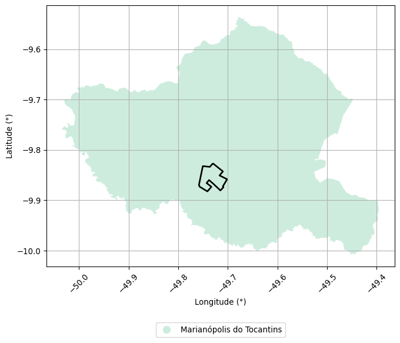
| Código da UF | Estado | UF | Código do Município | Nome do Município |
|---|---|---|---|---|
| 17.0000 | Tocantins | TO | 1712504 | Marianópolis do Tocantins |
70.1.2 Unidades de Conservação
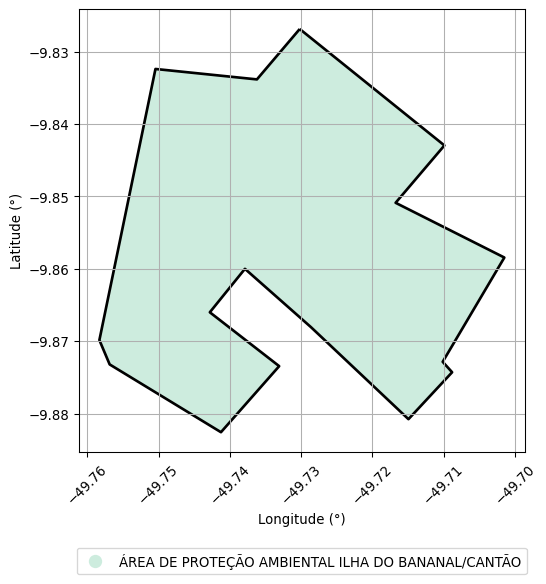
| Nome | Categoria | Responsabilidade | Área Sobreposta (ha) |
|---|---|---|---|
| ÁREA DE PROTEÇÃO AMBIENTAL ILHA DO BANANAL/CANTÃO | Área de Proteção Ambiental | estadual | 2272.6210 |
70.1.3 Terras Indígenas
Não há sobreposição
70.1.4 Projetos de Assentamento
Não há sobreposição
70.1.5 Território Quilombola
Não há sobreposição
70.1.6 SIGEF
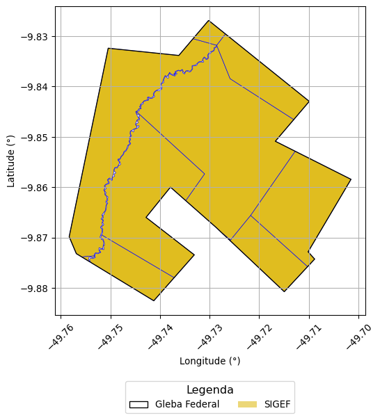
| Código SIGEF | Natureza do Polígono | Área Sobreposta (ha) |
|---|---|---|
| e256afe6-ef05-412f-af2e-8d0cf2b8f8ac | Particular | 1.2411 |
| 93acbec7-13e8-41b7-9ab7-ae1984a3b487 | Particular | 20.5312 |
| 6db505d6-9e11-44f7-bf2b-00bb6ef5961c | Particular | 232.9655 |
| 0f2c170b-8d8f-459d-9624-210817f51d35 | Particular | 280.7557 |
| e4798ce9-4784-47c2-aeca-ab83432d48de | Particular | 412.7709 |
| 02237f2b-a35d-45e1-81d1-c0a6f648669f | Particular | 730.6482 |
| 5b9bd6f0-663a-4d00-af95-747154cba509 | Particular | 445.0251 |
| 8da1d461-1aa5-452d-bfa0-feaa1979b087 | Particular | 138.3098 |
70.1.7 SNCI
Não há sobreposição
70.2 Gleba Analisada: LOT. MURICIZAL
| Nome da Gleba | Área (ha) |
|---|---|
| LOT. MURICIZAL | 3011.3463 |
70.2.1 Abrangência Municipal
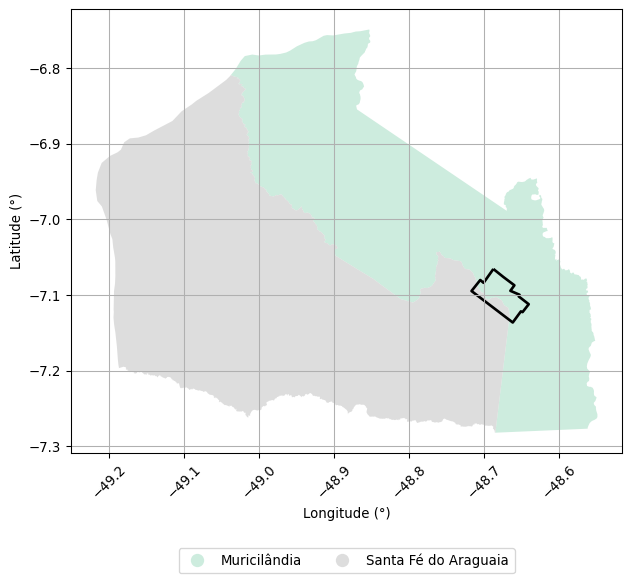
| Código da UF | Estado | UF | Código do Município | Nome do Município |
|---|---|---|---|---|
| 17.0000 | Tocantins | TO | 1713957 | Muricilândia |
| 17.0000 | Tocantins | TO | 1718865 | Santa Fé do Araguaia |
70.2.2 Unidades de Conservação
Não há sobreposição
70.2.3 Terras Indígenas
Não há sobreposição
70.2.4 Projetos de Assentamento
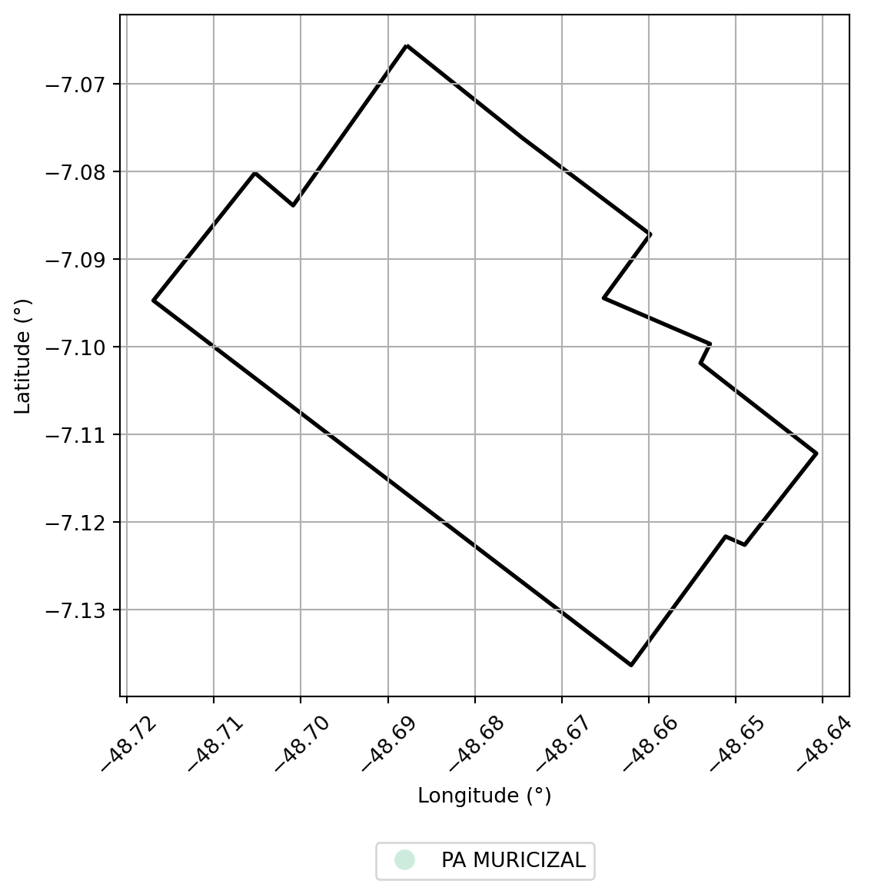
| SIPRA | Nome | Município | Área Sobreposta (ha) |
|---|---|---|---|
| TO0046000 | PA MURICIZAL | SANTA FE DO ARAGUAIA | 2.2059 |
70.2.5 Território Quilombola
Não há sobreposição
70.2.6 SIGEF
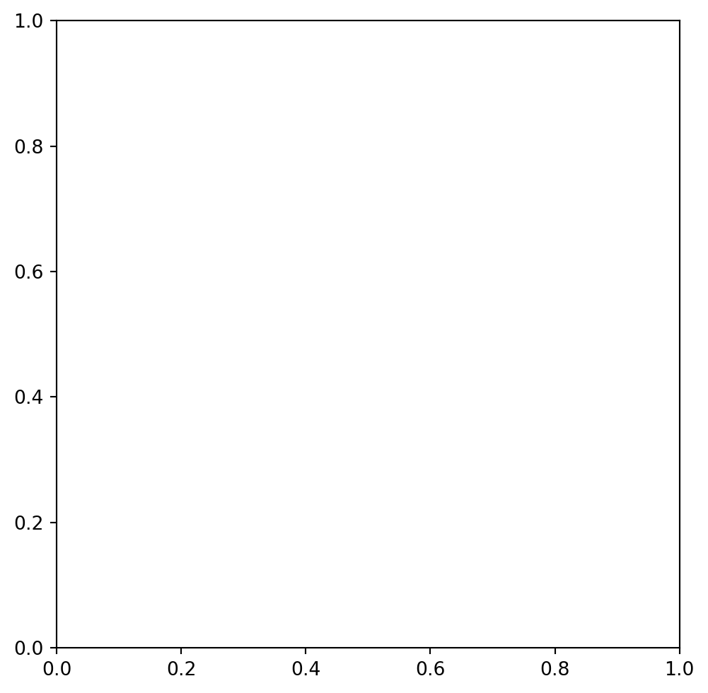
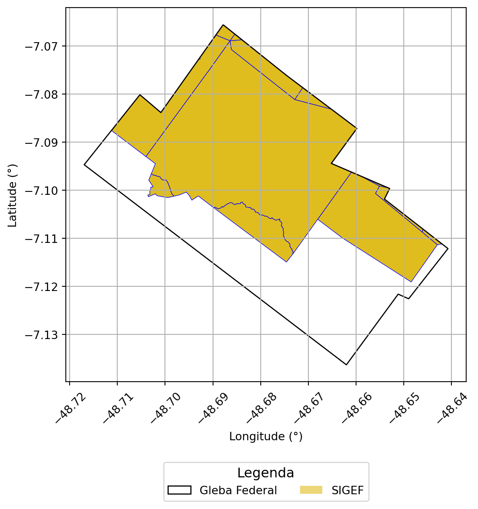
| Código SIGEF | Natureza do Polígono | Área Sobreposta (ha) |
|---|---|---|
| a843c46c-bbe7-4d63-b4a9-fe07a29c4ecc | Particular | 94.3925 |
| 9de9ef0e-f18a-40d1-a0d1-290a14ecbe92 | Particular | 61.9872 |
| 4902edf6-a8c6-438a-9cd7-189a5c4fa44d | Particular | 1.9812 |
| 0627e4a3-009c-4aed-a8a1-bed12ae804ae | Particular | 13.6024 |
| 56828a08-725e-4e4d-8125-a67136e9a732 | Particular | 321.4554 |
| 736979b4-7f87-40a3-83a6-0811f7f4ac5f | Particular | 11.4441 |
| e85c7397-4620-4d04-a204-34e92455874a | Particular | 3.6827 |
| c7207e8e-0c68-43e2-bb45-5901693c7977 | Particular | 1.3468 |
| e978123c-4c32-4c06-b7f8-ec25a716ffec | Particular | 1210.5940 |
| f34ea0c2-73fe-4f42-b9d3-2951213256fc | Particular | 8.4024 |
| 0653ace8-35c2-4b1f-b7b4-196d0066a92a | Particular | 0.0105 |
| b4714eaf-070f-4396-87f9-5428ef904aeb | Particular | 0.0012 |
| 9c9b02a3-82dc-47d5-ad70-2096ab049767 | Particular | 176.3509 |
| 325f0485-a410-4256-865c-1163a3168cac | Particular | 19.6800 |
70.2.7 SNCI
Não há sobreposição
70.3 Gleba Analisada: LOT. MURICIZAL
| Nome da Gleba | Área (ha) |
|---|---|
| LOT. MURICIZAL | 5571.6984 |
70.3.1 Abrangência Municipal
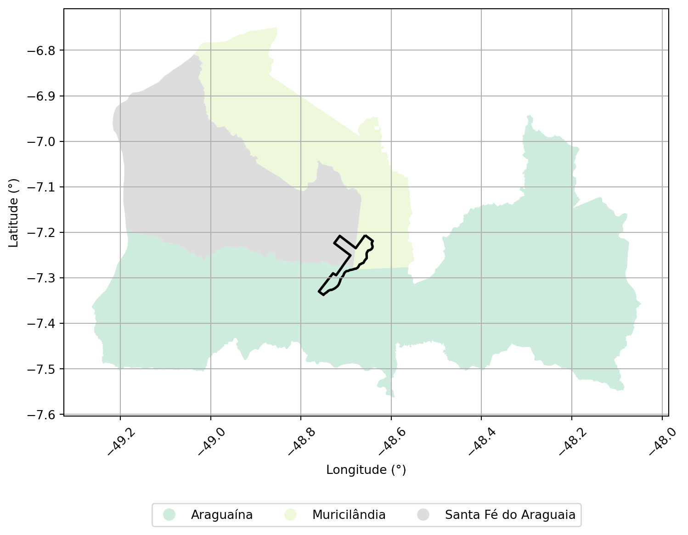
| Código da UF | Estado | UF | Código do Município | Nome do Município |
|---|---|---|---|---|
| 17.0000 | Tocantins | TO | 1702109 | Araguaína |
| 17.0000 | Tocantins | TO | 1713957 | Muricilândia |
| 17.0000 | Tocantins | TO | 1718865 | Santa Fé do Araguaia |
70.3.2 Unidades de Conservação
Não há sobreposição
70.3.3 Terras Indígenas
Não há sobreposição
70.3.4 Projetos de Assentamento
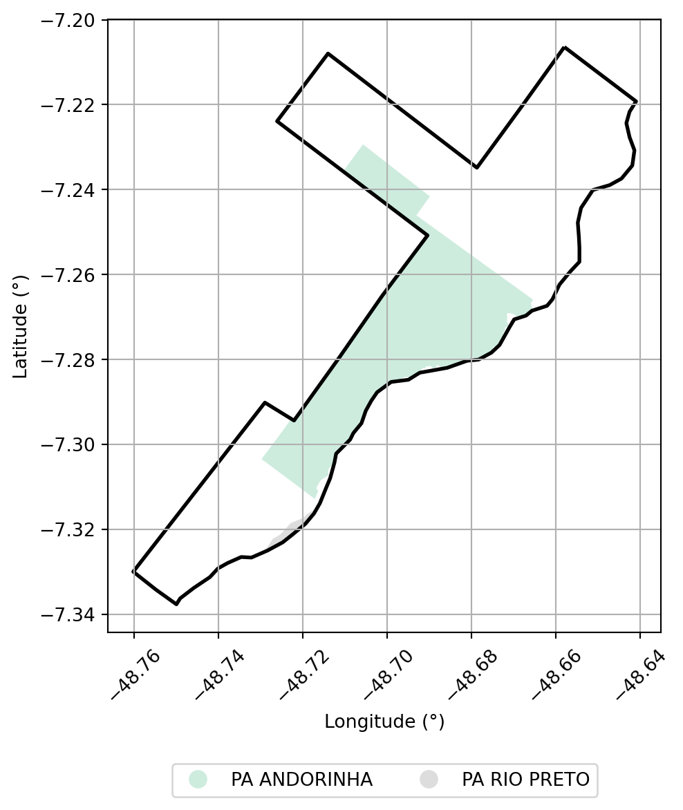
| SIPRA | Nome | Município | Área Sobreposta (ha) |
|---|---|---|---|
| TO0047000 | PA ANDORINHA | SANTA FE DO ARAGUAIA | 1810.1829 |
| TO0041000 | PA RIO PRETO | ARAGUAINA | 30.2773 |
70.3.5 Território Quilombola
Não há sobreposição
70.3.6 SIGEF
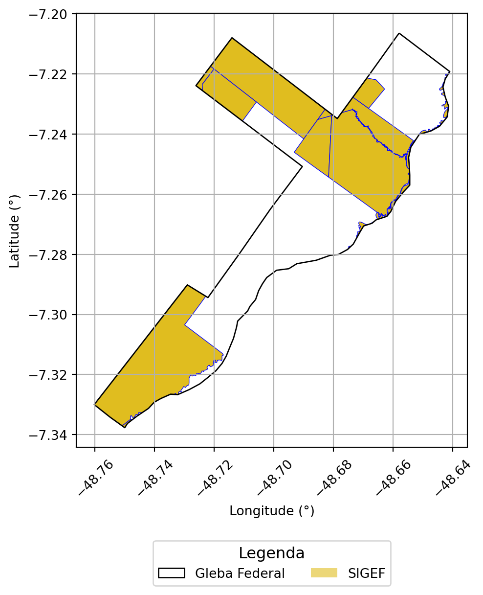
| Código SIGEF | Natureza do Polígono | Área Sobreposta (ha) |
|---|---|---|
| dbfada2d-73a0-4375-80c1-ce7897100dbe | Particular | 2.6057 |
| 6add01dc-d3d1-411e-aaa4-dfe7f97574a9 | Particular | 583.1453 |
| 9f63599d-762c-40bf-8dc6-bcb9181fca26 | Particular | 988.1642 |
| 0149086a-c76d-4445-9e3a-2cfe34086113 | Particular | 175.5951 |
| 6b9fb51d-2910-4132-a127-a0b8d1ca4607 | Particular | 189.7828 |
| 94b9d5c9-44f6-4a9a-b14d-3cd629099ac8 | Particular | 699.0399 |
| a30cc240-11e3-49d5-ba2e-020370631418 | Particular | 36.4044 |
| 6ec84d0f-2937-4e2c-9064-05a03b6b8477 | Particular | 71.7391 |
| 2b9b802a-297b-4040-9e10-70a9545dbe0f | Particular | 6.2280 |
| 53ca4a17-117a-4cac-954c-9a98e03440ea | Particular | 191.1705 |
70.3.7 SNCI
Não há sobreposição
70.4 Gleba Analisada: LOT. MURICIZAL , 2 ETAPA, LOTE A48
| Nome da Gleba | Área (ha) |
|---|---|
| LOT. MURICIZAL , 2 ETAPA, LOTE A48 | 32.6179 |
70.4.1 Abrangência Municipal
| Código da UF | Estado | UF | Código do Município | Nome do Município |
|---|---|---|---|---|
| 17.0000 | Tocantins | TO | 1713957 | Muricilândia |
70.4.2 Unidades de Conservação
Não há sobreposição
70.4.3 Terras Indígenas
Não há sobreposição
70.4.4 Projetos de Assentamento
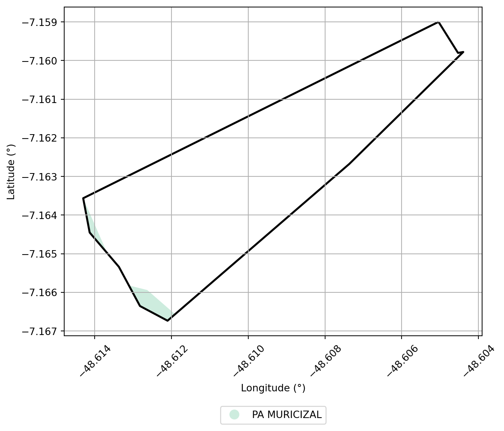
| SIPRA | Nome | Município | Área Sobreposta (ha) |
|---|---|---|---|
| TO0046000 | PA MURICIZAL | SANTA FE DO ARAGUAIA | 0.7063 |
70.4.5 Território Quilombola
Não há sobreposição
70.4.6 SIGEF
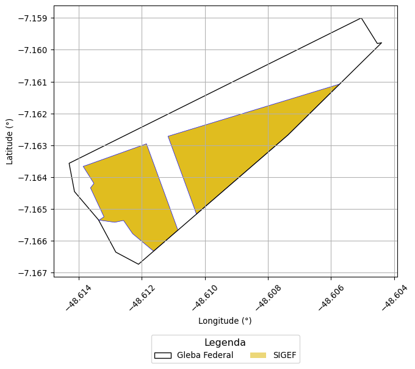
| Código SIGEF | Natureza do Polígono | Área Sobreposta (ha) |
|---|---|---|
| 7c62c73a-5022-44a8-bc36-e587eaf2a89e | Particular | 6.8607 |
| 59aa2e4b-3e93-45ab-9c2b-e19771350f34 | Particular | 9.4143 |
70.4.7 SNCI
Não há sobreposição
70.5 Gleba Analisada: LOT. MURICIZAL 1 ETAPA, LOTE 419A
| Nome da Gleba | Área (ha) |
|---|---|
| LOT. MURICIZAL 1 ETAPA, LOTE 419A | 146.3785 |
70.5.1 Abrangência Municipal
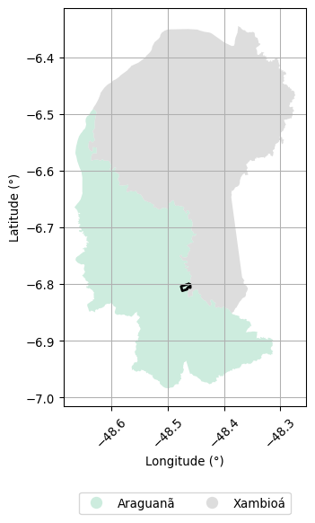
| Código da UF | Estado | UF | Código do Município | Nome do Município |
|---|---|---|---|---|
| 17.0000 | Tocantins | TO | 1702158 | Araguanã |
| 17.0000 | Tocantins | TO | 1722107 | Xambioá |
70.5.2 Unidades de Conservação
Não há sobreposição
70.5.3 Terras Indígenas
Não há sobreposição
70.5.4 Projetos de Assentamento
Não há sobreposição
70.5.5 Território Quilombola
Não há sobreposição
70.5.6 SIGEF
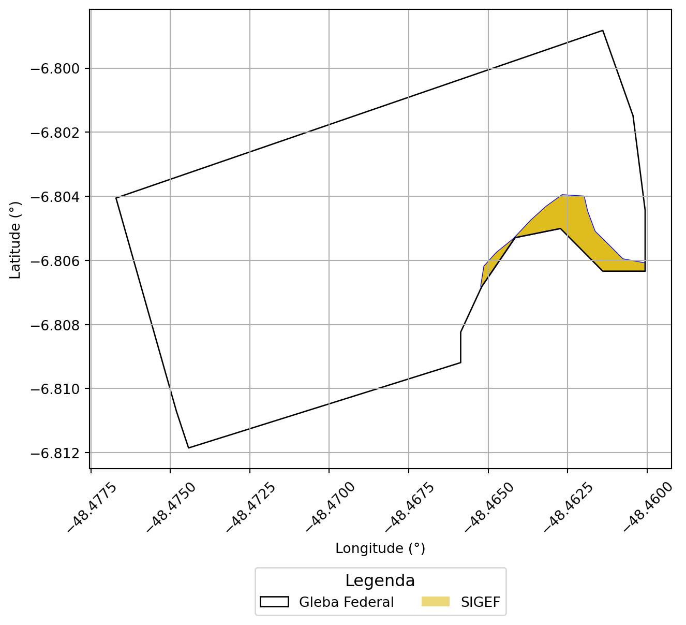
| Código SIGEF | Natureza do Polígono | Área Sobreposta (ha) |
|---|---|---|
| c8c30488-187b-4366-b6b9-48f389b743b4 | Particular | 4.4581 |
70.5.7 SNCI
Não há sobreposição
70.6 Gleba Analisada: LOT. MURICIZAL 2 ETAPA
| Nome da Gleba | Área (ha) |
|---|---|
| LOT. MURICIZAL 2 ETAPA | 45918.8026 |
70.6.1 Abrangência Municipal
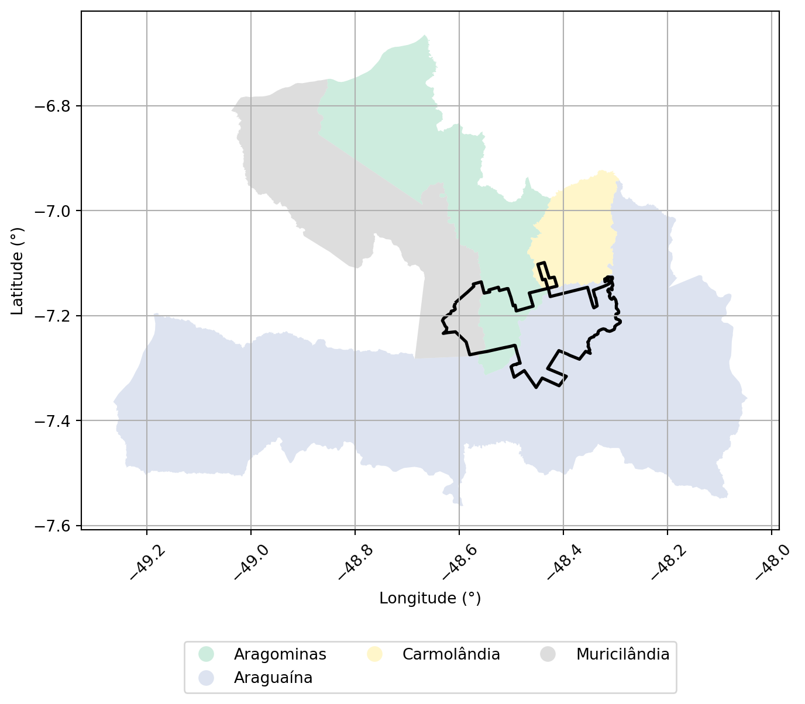
| Código da UF | Estado | UF | Código do Município | Nome do Município |
|---|---|---|---|---|
| 17.0000 | Tocantins | TO | 1701309 | Aragominas |
| 17.0000 | Tocantins | TO | 1702109 | Araguaína |
| 17.0000 | Tocantins | TO | 1703883 | Carmolândia |
| 17.0000 | Tocantins | TO | 1713957 | Muricilândia |
70.6.2 Unidades de Conservação
Não há sobreposição
70.6.3 Terras Indígenas
Não há sobreposição
70.6.4 Projetos de Assentamento
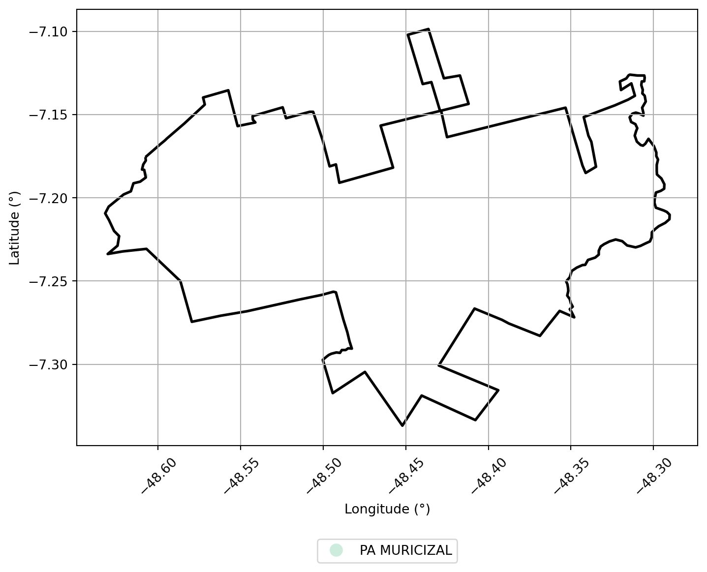
| SIPRA | Nome | Município | Área Sobreposta (ha) |
|---|---|---|---|
| TO0046000 | PA MURICIZAL | SANTA FE DO ARAGUAIA | 11.3204 |
70.6.5 Território Quilombola
Não há sobreposição
70.6.6 SIGEF
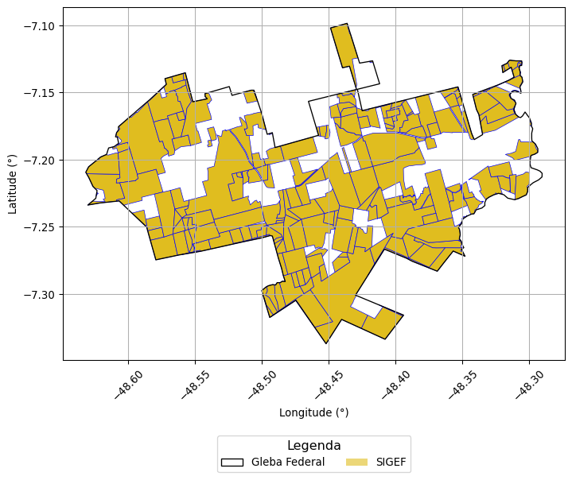
| Código SIGEF | Natureza do Polígono | Área Sobreposta (ha) |
|---|---|---|
| 10561b75-a162-4468-bf53-75f593a6a1a1 | Particular | 20.9629 |
| 34fd704f-ce9d-431f-8990-c9bd5394ca1d | Particular | 75.2768 |
| 29d1bc8c-b217-46c0-bfb3-123228c9e930 | Particular | 85.4384 |
| 1c8547d1-c751-4141-8b88-9780331179e3 | Particular | 241.3204 |
| 7767ff75-4b85-47f6-894f-930e5a06cfd1 | Particular | 5.0583 |
| 33d653cc-5a17-47b8-b14d-9b9e22dccfc7 | Particular | 83.8631 |
| 6dad83ee-ea3e-437a-b085-954d2dcb6d80 | Particular | 0.7275 |
| 7b12e03f-f68c-464a-b559-773695bd1fe2 | Particular | 10.5396 |
| 18400519-2c31-440d-8b08-999219e6a6e5 | Particular | 843.6385 |
| 82dad1ce-4585-4eab-a8ef-6602dd582cfd | Particular | 153.6074 |
| 6325dba4-1df9-46ab-bdc8-540851e7ec2f | Particular | 193.0699 |
| f4345af7-e2d2-494a-90ac-7583487bd3d8 | Particular | 732.1173 |
| 22819463-dc2f-43af-8401-8983b17a5936 | Particular | 29.7028 |
| f115488c-538f-45ed-a525-3dfff1e9091e | Particular | 185.3241 |
| aa58a131-31f5-4bab-ba18-818b39b888f0 | Particular | 62.8119 |
| 4f995a13-c4e3-48d0-972a-5b45334e6d6c | Particular | 176.0393 |
| 6e850239-48eb-4aca-a82c-1ac8751ed4b1 | Particular | 14.9353 |
| dfa240db-1098-4b0a-b348-54b0a641c11b | Particular | 595.8601 |
| d1da4a45-dccf-40ff-8c64-94adf6cf72ee | Particular | 295.1620 |
| 718b5b11-eb24-49da-b920-3e496a34d74c | Particular | 118.5673 |
| 09e85126-b1ab-4b75-9af9-6ff7f6f2b910 | Particular | 171.3684 |
| 099187cb-529b-437b-97a8-e01a9043508b | Particular | 56.2686 |
| bc57c467-2a8b-4d9a-b38a-55239da36878 | Particular | 365.3126 |
| 2492f08b-5c25-4f09-8604-ffd8f795e997 | Particular | 68.6218 |
| e7affe82-a533-457a-9b81-baf6abe7ce8e | Particular | 59.9174 |
| 157fbf8d-fe96-4f78-bec8-17a12af0f96d | Particular | 2.8522 |
| 016b3e6b-d900-41a0-9470-87710f944466 | Particular | 164.7066 |
| 17224e7a-8549-4b07-93cf-472bda7c972b | Particular | 106.9400 |
| 7fc89896-9d9f-47a2-86dd-5c331bb54c8e | Particular | 170.3714 |
| 90f77220-9864-44a9-a702-0909ec2fe912 | Particular | 19.5864 |
| af9f24dd-65cc-4e68-993f-6410a100e7cc | Particular | 177.1622 |
| cd6e752b-758a-4c77-b5d4-9e5dcbafcb4d | Particular | 43.8829 |
| e64d1024-4305-443c-8ea3-99fae3d6cab9 | Particular | 14.6760 |
| 8c9b369b-1a41-4b40-9fd3-6d1b83e70456 | Particular | 58.2505 |
| 9f1a53c1-4561-4b1e-8e69-ee434a2be0bd | Particular | 58.3886 |
| 84b96e0f-e0a9-4c23-aa60-8d23481ee3a6 | Particular | 74.9103 |
| 2a0e5856-db86-42e4-b001-89a90705820e | Particular | 81.0434 |
| c6006aef-eeba-44a1-8e58-6b319fe6ee60 | Particular | 243.0377 |
| f8736ac3-c384-4761-9ae2-6d4b56a11a94 | Particular | 65.9582 |
| d49990d7-5008-4e02-b744-210dc54bae15 | Particular | 58.4354 |
| 47e1c7c4-b238-474a-876d-cce0a59b55b9 | Particular | 37.7938 |
| 657fe9c3-d6fb-4c14-a942-9d9b03d4b136 | Particular | 100.3603 |
| 3f7423ea-31fe-4294-8aa5-d064d59e6aab | Particular | 34.3476 |
| b58080d2-de72-499e-b9e6-ea880e0c8b81 | Particular | 14.4046 |
| c03ff5de-db9a-417a-a617-288dc88a1b1a | Particular | 527.8571 |
| 408b5318-9c11-40cf-b809-6ceb75bdbe44 | Particular | 6.9691 |
| c60c704a-4ff1-43aa-ab2a-690ae5962341 | Particular | 0.5414 |
| 93080fb2-05b1-4bf8-9b4b-effbaf84a0e5 | Particular | 8.9930 |
| f4417201-6ce6-4c4a-891a-acf58775f086 | Particular | 75.4237 |
| 3a078426-a762-400a-8d15-f700fb9d2660 | Particular | 533.1795 |
| 8878a978-280f-45ec-9150-806645077a71 | Particular | 190.6604 |
| 51a7fa01-2954-40fc-868a-a40119c7634b | Particular | 53.2171 |
| 6afc91be-ae88-4a22-915b-e043594e3566 | Particular | 101.6602 |
| fd00f745-b499-43d2-b441-0d7026dae30d | Particular | 25.4557 |
| 38b4a711-4c4b-4cb0-a100-32819833f1ba | Particular | 15.8098 |
| 046789e4-27d3-4f22-bc26-7898b63fcc87 | Particular | 46.3926 |
| a18bb531-cbeb-43ae-bc35-0ad6462d1759 | Particular | 236.4564 |
| 7e458d57-e8df-4690-86e2-50bd12795a9e | Particular | 14.9230 |
| 6716627a-db87-4200-b3df-807483135c4e | Particular | 0.0965 |
| 18c698d5-7242-4f7e-a708-27c5d36dfac7 | Particular | 68.9361 |
| c8e988ef-58db-49ec-95dc-01ea8d69fc0c | Particular | 29.9787 |
| ad8be8ae-c947-4620-8e5a-37a16f36b31f | Particular | 99.2196 |
| 27e3b08f-e4f0-40c1-b9ca-35ea657a6024 | Particular | 333.5435 |
| 2adffd7a-a401-43f0-a674-be853a3d4de7 | Particular | 323.3218 |
| a11f2f67-d73d-4dde-a5be-99a2e4198969 | Particular | 82.1755 |
| 085751f4-3517-4aa8-98dc-5373d0a7e55e | Particular | 240.5162 |
| fe4c80ca-7857-4b6b-afa7-f72c786087e5 | Particular | 218.0803 |
| e9b94df0-a5dc-4ea3-ac5a-9e37ddc91424 | Particular | 152.8266 |
| e1894449-19d3-4f09-8ddd-40daa7a5da0b | Particular | 119.2377 |
| 2873da5e-d2ac-4dae-91f5-9656c9165380 | Particular | 172.2670 |
| 91c13fcf-790d-4845-9b9f-c9df4e511dd3 | Particular | 82.7969 |
| 41b0996e-87e6-4b5c-bf06-891e97f4492d | Particular | 8.9127 |
| e14ef9eb-ea95-495c-8844-c5df492cd13a | Particular | 61.1451 |
| 9caff8c7-a54e-46d1-ba60-b4658c19b9bd | Particular | 1.5202 |
| 1379d630-425b-4c56-96fc-7642eb493291 | Particular | 52.6479 |
| e10ec22b-f3ac-4881-8d51-e0dd802f85db | Particular | 222.5807 |
| 6e520441-d7de-4341-a052-07b5b2ef0f5f | Particular | 58.4977 |
| 5c064b50-8954-4a53-b21e-2336e9aa576f | Particular | 1.1755 |
| 226490d8-290b-4f17-8760-7ead39f1b267 | Particular | 38.9899 |
| 020a060f-1e27-4577-88db-e0b1eb39eb78 | Particular | 156.0124 |
| c21fd111-28a1-4ddd-8673-438bce5b741a | Particular | 341.8401 |
| c52eb1b5-d524-42a1-888d-7a43d7fd194a | Particular | 180.8441 |
| b2ae8589-52d2-40a3-bcc4-f2de35bd3153 | Particular | 109.4150 |
| df9b9513-7241-4cc2-b863-72fceb5aae26 | Particular | 76.2901 |
| fc5f900a-8bed-4c44-bc73-81e8a122a663 | Particular | 0.0404 |
| 46f0b934-a076-452f-88b6-e22e9e033078 | Particular | 96.6192 |
| fa36d96d-d03d-4e29-a1a4-bb95b129ab5b | Particular | 1.0212 |
| a80051c8-c086-40f9-807c-1532606d5fb2 | Particular | 1.5957 |
| 27053365-97c3-4b92-a391-4ce8f7c66b42 | Particular | 84.5560 |
| ee4158d9-9207-4584-b34e-884570e55fff | Particular | 6.6092 |
| df67b641-bb31-492f-9586-976deaadccbb | Particular | 7.1701 |
| 1342533f-3e20-4555-99ae-784d946a9670 | Particular | 0.2160 |
| 973f9a2c-efc1-4906-a35d-e92e8cb2ee3a | Particular | 0.4402 |
| 23495529-ee16-42ae-a8bf-2fec02b6c749 | Particular | 237.8415 |
| 100779fe-8e8a-41a8-9da7-97cae257b6a1 | Particular | 201.6819 |
| 9984572c-870a-4fab-8aca-96324daf069c | Particular | 71.5720 |
| 21bc683e-8bbf-4a8e-b25a-ae74903b6fc4 | Particular | 21.8036 |
| 2c4eedf7-831b-42a0-8d16-c24d6cbe3151 | Particular | 0.1684 |
| ff694c50-d5db-4324-92a9-bc0fc1aa5e4c | Particular | 34.2313 |
| 73b13d6f-92b5-4261-8d37-1704ca4a6bce | Particular | 1.0905 |
| c80c6118-3b52-4376-99bb-d3f5d6676e9e | Particular | 41.1210 |
| e0d61bca-218f-4ec3-afff-603e73ca02a4 | Particular | 118.8102 |
| e800b0c0-2e08-4366-bdc7-0be80617686f | Particular | 20.4757 |
| cadbb8ba-2b2b-4506-831e-de9cff243789 | Particular | 878.4963 |
| 96442b30-5acf-4aa4-94b1-81332b5cf5c7 | Particular | 21.9234 |
| e4836d4e-611c-402b-8815-22596926c14a | Particular | 97.5374 |
| feebbb35-e0a8-4aab-9269-1007d3aa7d4e | Particular | 106.3538 |
| 99f8df42-c1a1-4715-afb6-1592ede46d3a | Particular | 122.5010 |
| ec12a6c9-3132-42ea-a9c4-f8289a556f8c | Particular | 6.5103 |
| 1e1a27bb-2e4a-4a35-8027-df13a01488b3 | Particular | 74.2011 |
| d73e240f-e47b-4e1e-8d01-b9e7c749d392 | Particular | 95.1114 |
| 2e1e8524-9a09-438c-bb21-a3a0ae07bcbc | Particular | 188.8928 |
| d19febfa-5ed4-4774-b4fc-c486406631dc | Particular | 20.2416 |
| b823a08d-64f3-4d02-adf9-858bd110c126 | Particular | 67.4140 |
| f2602ca5-b9aa-4cbf-bf6a-36c4798b554a | Particular | 65.7862 |
| 02ab9ba9-7537-439a-9997-1c4ad1008406 | Particular | 240.0944 |
| 5d82f396-5d4c-4ba9-b8a0-709277f0c98a | Particular | 21.3594 |
| e37d017e-c194-4a8d-b568-1980b69b4882 | Particular | 10.1650 |
| 944bc56a-9898-4967-93a9-840edeee641e | Particular | 98.9357 |
| 1bd3c402-1fd2-4b71-80b7-52d271bddf95 | Particular | 3.0996 |
| 6fe24879-de59-4087-8fe7-7ec26dab3019 | Particular | 74.6898 |
| 60ef3b00-4a1a-4911-9481-d746da861ceb | Particular | 92.1321 |
| aabf950f-e90f-48dc-b0b0-06c2381166e7 | Particular | 81.2657 |
| 59cc4021-15f9-430a-828a-1111b45d6d24 | Particular | 53.7338 |
| e3e8ed98-7cbf-4070-8584-d61176e3070e | Particular | 481.5588 |
| 91384f1a-56f6-45a6-8fbf-6aa8098e8fe7 | Particular | 5.4929 |
| ab7a14fd-f8a4-4200-994f-daacdff39dca | Particular | 38.4731 |
| 37198e25-2db9-47e7-b639-62799324c29b | Particular | 15.2931 |
| 996299a8-8d39-43c6-a236-6754c236aca8 | Particular | 55.0896 |
| 121d86c7-d58d-42e1-a6f9-4ac9e03ef06d | Particular | 74.3136 |
| ffbaf75a-5535-4884-84b6-b3ab972d1a57 | Particular | 113.6106 |
| e37184f5-867a-42c4-b1e3-d1f291c91b0c | Particular | 96.2766 |
| 9966ba4c-9458-4d2c-bd34-4e4f528c2b96 | Particular | 324.1813 |
| ac4f3063-09ee-48ad-819d-b5b25f5a196d | Particular | 432.2850 |
| a68ba996-8663-4c7d-a86c-2187c66ae92d | Particular | 70.4529 |
| ed02acb7-c3db-40c2-89d0-7dd83434b93c | Particular | 175.7158 |
| 86df3781-02ba-4275-bcb1-866ecf887836 | Particular | 52.8159 |
| 0c755b04-567a-4309-9a90-4dda25e24573 | Particular | 54.7259 |
| 0269e0f5-045e-4110-a6fa-9cfae66581c1 | Particular | 349.1811 |
| 3a94913c-953a-4b19-ba83-50331082d54c | Particular | 36.8843 |
| a30cc240-11e3-49d5-ba2e-020370631418 | Particular | 451.0166 |
| 97606a76-a4df-4880-94fa-43a90efa1e1b | Particular | 64.3476 |
| 39642a51-3d61-4a1c-ab3c-cb9ecff72e04 | Particular | 1377.3968 |
| 84a66b12-7088-497a-8f7b-65ac68eeccd6 | Particular | 1.8019 |
| 0935daa8-0061-4955-a455-2f0b702518ab | Particular | 474.8981 |
| 29d07011-5fa0-4cb7-bf41-1d1d4c79d15e | Particular | 298.8377 |
| 36b57d5c-ca69-4c9b-af78-ec4bfcb055fd | Particular | 137.2395 |
| e6b43e40-b581-4e39-9bc2-a9e53fb1d527 | Particular | 181.5433 |
| c31d367d-4706-4c95-8f48-315afd25e480 | Particular | 50.5688 |
| 76a9d52a-15cd-4ab0-8252-779d80c65119 | Particular | 576.7117 |
| e13ebad0-af9e-4f13-a4d0-43248ab251a7 | Particular | 12.8260 |
| 44bc1956-137b-4fa2-a1f1-5a47fcf4672c | Particular | 615.0679 |
| 6be77a25-394f-4f78-a941-bbccc2751055 | Particular | 42.6137 |
| eadeb4ae-9dba-4365-940e-877fb4230417 | Particular | 199.9164 |
| 9abda49b-c51b-44e9-afc8-0dfd7f9ab82d | Particular | 1930.5738 |
| 9fb9b237-f762-4b6b-94f8-790f705b3c96 | Particular | 1997.4010 |
| 054845a8-d5f2-42d1-b00a-8368208cdaf3 | Particular | 62.2611 |
| 0c9c38f9-0c07-4d3e-8be7-083e5d45df8e | Particular | 60.4490 |
| e97ade11-207f-4f64-bf5e-fc2d053f874a | Particular | 181.6628 |
| 82929d30-5f72-4640-9e8b-662c8a2cc5ee | Particular | 233.3100 |
| ae06ba40-8eb1-4500-8abc-8bce76fc3bae | Particular | 62.9149 |
| 995b8828-23fb-4ae0-bb72-c0892265f626 | Particular | 710.9788 |
| c54e083c-2a1a-4961-a6b8-d4a6d213edc9 | Particular | 368.3128 |
| 905e9d8d-a94f-42d6-8752-e1c463a0ecfa | Particular | 104.2870 |
| d0043d98-1ab3-400d-b644-ad51d06982e5 | Particular | 460.0765 |
| 37768435-71cb-4d00-8c42-6637271b4d05 | Particular | 468.9282 |
| 1aa2770b-7cd5-4ffe-a43d-7f31d5c3e073 | Particular | 210.6325 |
| ae29d1fa-acd9-4f9c-be93-6e8c26a588b8 | Particular | 34.9267 |
| 415dc2a2-6d6a-4ca3-a7a7-5f5b4ef313d1 | Particular | 126.6519 |
| bc16d4eb-07a2-4206-93be-31a018e85e91 | Particular | 107.1620 |
| ef569326-a246-4ff6-ada3-a0bbd26a1a31 | Particular | 481.4058 |
| b4913c66-43f2-4c51-9f4f-08f11818777d | Particular | 23.9447 |
| 0120c32b-5dd7-4324-93cc-03bb9e5f0b86 | Particular | 107.6976 |
| 72fd176b-cc6d-4e97-b0c2-05d4bbed3309 | Particular | 193.7285 |
| 6d01b910-f682-4d9b-a1bb-3388cd3dd196 | Particular | 14.0026 |
| e400f0e9-3c93-4c76-a596-ebd2d59839a7 | Particular | 80.4225 |
| 764e7563-3ab8-495c-a616-d3bbbb6426c2 | Particular | 33.5000 |
| 3282b737-de0b-4a44-b931-de7517ff6226 | Particular | 144.0226 |
| 9d8ff986-0c79-407f-b68c-7eae1059c867 | Particular | 180.6870 |
| bd4597b9-7479-4ef8-b9ff-24129ceee264 | Particular | 69.4537 |
| 2e6095d3-1f70-4ee0-b15c-ee6e09767ff1 | Particular | 448.6043 |
| 9b7e4e4f-dad7-485d-9f6e-24b3487e1210 | Particular | 199.6811 |
| f1544a1d-86ae-4187-97d7-ba7f5e995715 | Particular | 44.0828 |
| d8d2dd46-f726-464b-b828-1f59b3603124 | Particular | 15.4187 |
| 680d849c-bb7e-4c4b-93aa-35b391e7b91d | Particular | 0.3993 |
| 535462ac-57c9-462b-be30-09b9a23ce6b3 | Particular | 92.6025 |
| cdc72f58-5af9-4a47-a01d-19a572f3f921 | Particular | 247.3128 |
| 4f7ac43d-6656-41b5-a778-97f76cea9dd8 | Particular | 173.8111 |
| 45f38159-149e-459e-88f3-5a3e30eb2c55 | Particular | 206.7296 |
| 5c1b24ea-07f2-42a0-8a81-a6a0bbe4e438 | Particular | 4.0377 |
| 0b619bdb-1764-49a1-82f5-6eadd81c9f22 | Particular | 94.7953 |
| a806148c-1ff9-4886-a0fa-e6088fc6829e | Particular | 62.2081 |
| 725ea3d3-a402-4c4e-b196-71650821f17d | Particular | 81.7520 |
| 1f7b7804-690e-4278-9707-3f3cdc3c684e | Particular | 207.7345 |
| 9cf555cb-95c6-460c-9cf4-9b133eefae5e | Particular | 14.0649 |
| 747d0ea2-d468-486b-8cb9-91b6898d0b3b | Particular | 273.0121 |
| f2bb9a9d-4a1a-4169-a0f4-888a162a7bf1 | Particular | 322.2596 |
| 090ece77-25fc-43ec-9031-ba7550cd8515 | Particular | 10.5133 |
| daec1cd4-d62b-402a-9c81-f13f15393cb0 | Particular | 256.4508 |
| 56ad53aa-d633-474b-a50b-a3afbdfbaefa | Particular | 239.7985 |
| 40634f19-41b4-4211-8255-a29063de72b7 | Particular | 204.6906 |
| 987700c9-6f46-47e0-a5f8-94dd9829563e | Particular | 52.2193 |
| d954cb72-eb3c-45d8-b6e8-8b8fb64f1591 | Particular | 256.1551 |
| 843f9522-6b10-4d2c-a1b6-5c91424f1aed | Particular | 99.6190 |
| 124ce6e0-a23a-46c5-b04f-17a28bc44a6b | Particular | 336.3407 |
70.6.7 SNCI
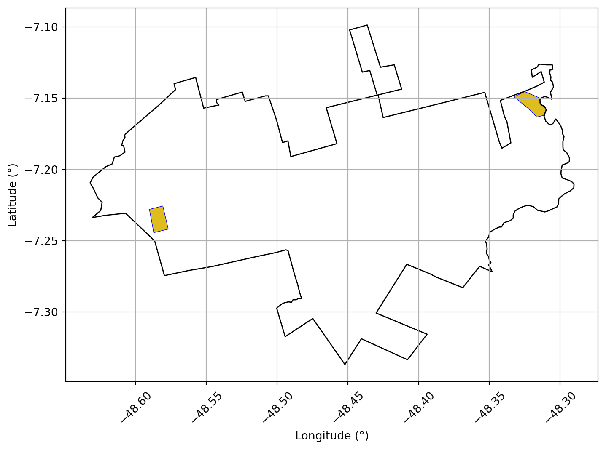
| Código SNCI | Área Sobreposta (ha) |
|---|---|
| 261301000124-85 | 236.4289 |
| 261106000012-59 | 207.5101 |
70.7 Gleba Analisada: LOT. MURICIZAL 2 ETAPA
| Nome da Gleba | Área (ha) |
|---|---|
| LOT. MURICIZAL 2 ETAPA | 8852.1648 |
70.7.1 Abrangência Municipal
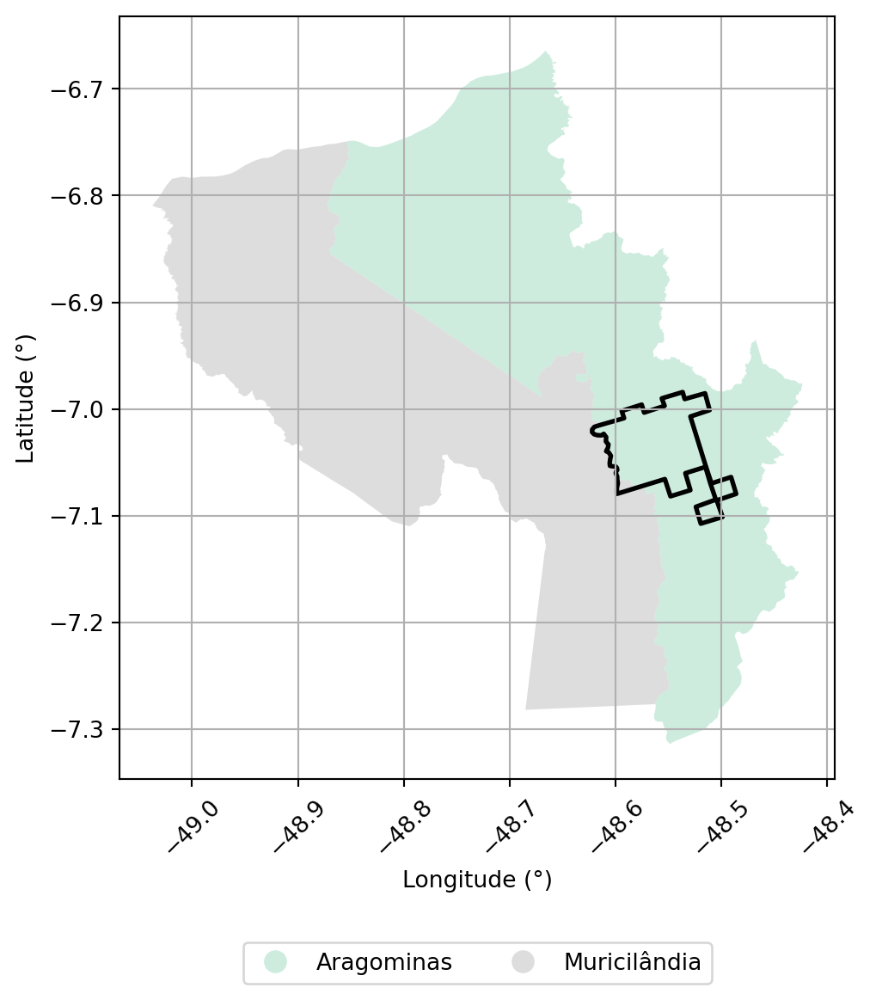
| Código da UF | Estado | UF | Código do Município | Nome do Município |
|---|---|---|---|---|
| 17.0000 | Tocantins | TO | 1701309 | Aragominas |
| 17.0000 | Tocantins | TO | 1713957 | Muricilândia |
70.7.2 Unidades de Conservação
Não há sobreposição
70.7.3 Terras Indígenas
Não há sobreposição
70.7.4 Projetos de Assentamento
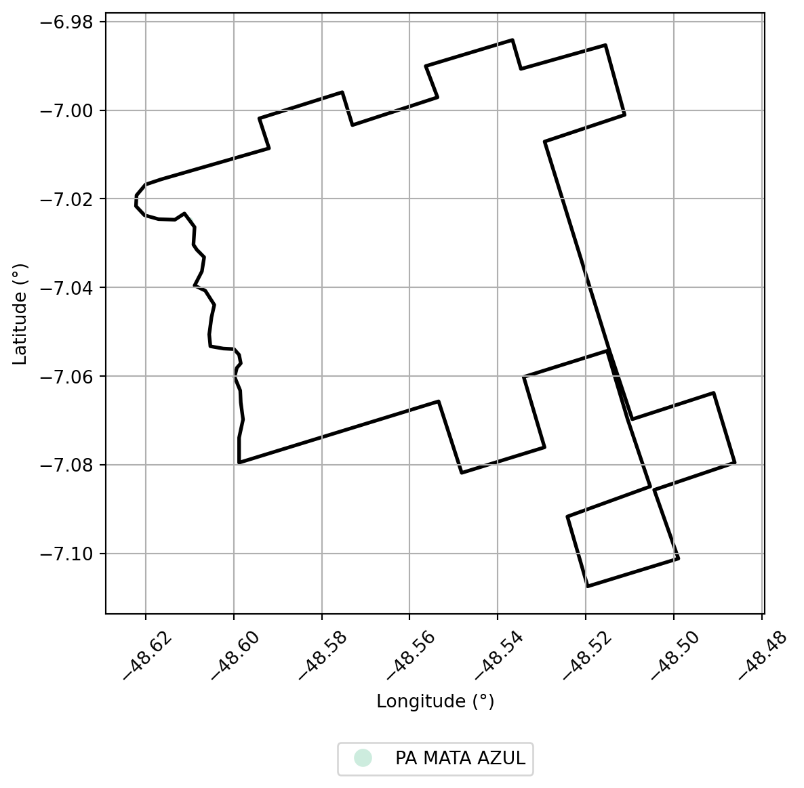
| SIPRA | Nome | Município | Área Sobreposta (ha) |
|---|---|---|---|
| TO0211000 | PA MATA AZUL | MURICILANDIA | 2.4701 |
70.7.5 Território Quilombola
Não há sobreposição
70.7.6 SIGEF
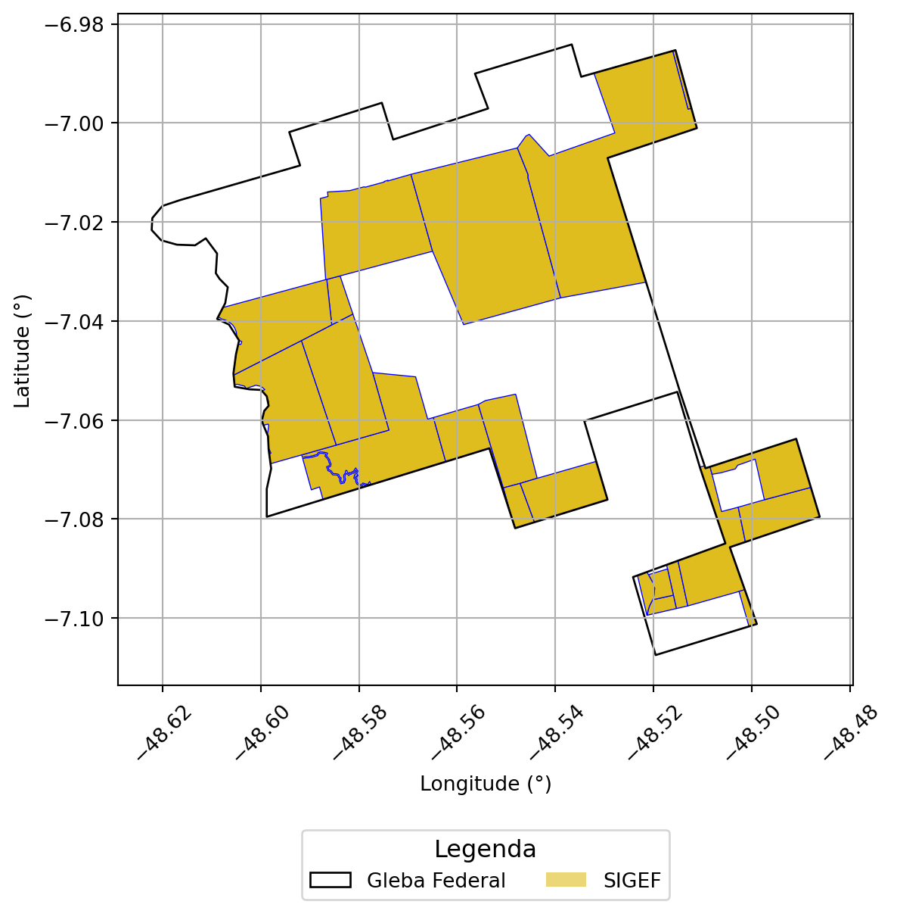
| Código SIGEF | Natureza do Polígono | Área Sobreposta (ha) |
|---|---|---|
| 658073f4-e694-47e1-a224-8881088be674 | Particular | 0.0063 |
| 4a35d9b1-fa67-480a-bd41-11372badb8ba | Particular | 864.2213 |
| ad8be8ae-c947-4620-8e5a-37a16f36b31f | Particular | 13.1393 |
| c2d122ae-2246-4cab-ade9-d6bbbd05c469 | Particular | 9.8353 |
| bfdcdd06-837c-485a-adf3-ce4583613d3e | Particular | 128.7522 |
| 94b94a57-63bf-4fe2-978b-bec3ce49d5d0 | Particular | 413.8229 |
| 36d6b8f2-3d7e-4007-84e9-ab914e5215d9 | Particular | 0.8252 |
| 72a7c0f0-25fd-46bf-857c-122c84827884 | Particular | 19.6271 |
| ae4d9643-0b42-4d41-ac10-148d38e06fdb | Particular | 195.0240 |
| b64273cf-628d-44b2-9c25-a0c1f61fb11f | Particular | 330.8472 |
| 09de9b63-270a-48b4-8d51-091b5f03a072 | Particular | 325.4134 |
| 74c6f74a-df76-4a10-99b1-d32b7d4833f4 | Particular | 289.7113 |
| 2ea4dd29-fd1c-49b4-b2de-ec1389bc7b03 | Particular | 39.7202 |
| 7c395205-6d93-490b-be26-e310e8a16d48 | Particular | 24.2049 |
| 84ee6c5f-bfeb-46bb-9cf4-0e4eee8eaa3e | Particular | 18.2747 |
| 49ad8e55-45ab-4aac-b304-7cfaab1770d0 | Particular | 27.2335 |
| c1421b76-81a6-4422-af51-b70db70b4eee | Particular | 159.9975 |
| d9aa4b3f-fad5-40c3-971f-de647dff537c | Particular | 40.0176 |
| 85736d80-65ef-4bd2-8ed7-c44d862c5d1d | Particular | 164.6246 |
| 727c0c0a-3983-4b1b-97f4-0b243ecd2d4b | Particular | 111.6572 |
| 526132cd-eb32-46a5-a10d-1af9d57d1dec | Particular | 64.9823 |
| 40e0b666-9fdd-44ee-984a-af6713b0fcf7 | Particular | 354.5747 |
| f53bc34f-9d3c-4fec-a8ef-097bba5e8e04 | Particular | 986.3257 |
| ea3f2952-22dc-4410-967b-77a64f5b3a53 | Particular | 134.5961 |
70.7.7 SNCI
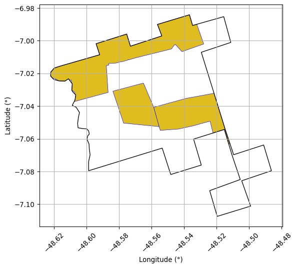
| Código SNCI | Área Sobreposta (ha) |
|---|---|
| 261112000049-50 | 606.4483 |
| 261202000014-96 | 850.9737 |
| 261303000051-48 | 1810.6449 |
70.8 Gleba Analisada: LOT. MURICIZAL 2 ETAPA, LOTE 258 (SUBDIVISÃO)
| Nome da Gleba | Área (ha) |
|---|---|
| LOT. MURICIZAL 2 ETAPA, LOTE 258 (SUBDIVISÃO) | 393.2492 |
70.8.1 Abrangência Municipal
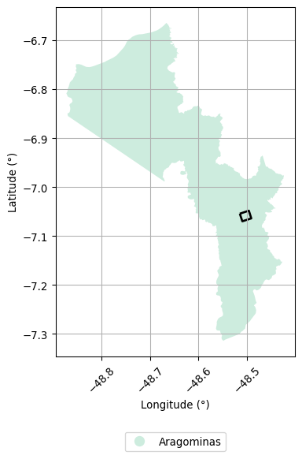
| Código da UF | Estado | UF | Código do Município | Nome do Município |
|---|---|---|---|---|
| 17.0000 | Tocantins | TO | 1701309 | Aragominas |
70.8.2 Unidades de Conservação
Não há sobreposição
70.8.3 Terras Indígenas
Não há sobreposição
70.8.4 Projetos de Assentamento
Não há sobreposição
70.8.5 Território Quilombola
Não há sobreposição
70.8.6 SIGEF

| Código SIGEF | Natureza do Polígono | Área Sobreposta (ha) |
|---|---|---|
| ae4d9643-0b42-4d41-ac10-148d38e06fdb | Particular | 0.6058 |
| 344c67ff-af84-4f8d-be3f-c6ba853c5a9a | Particular | 154.6730 |
| ea3f2952-22dc-4410-967b-77a64f5b3a53 | Particular | 210.7148 |
70.8.7 SNCI
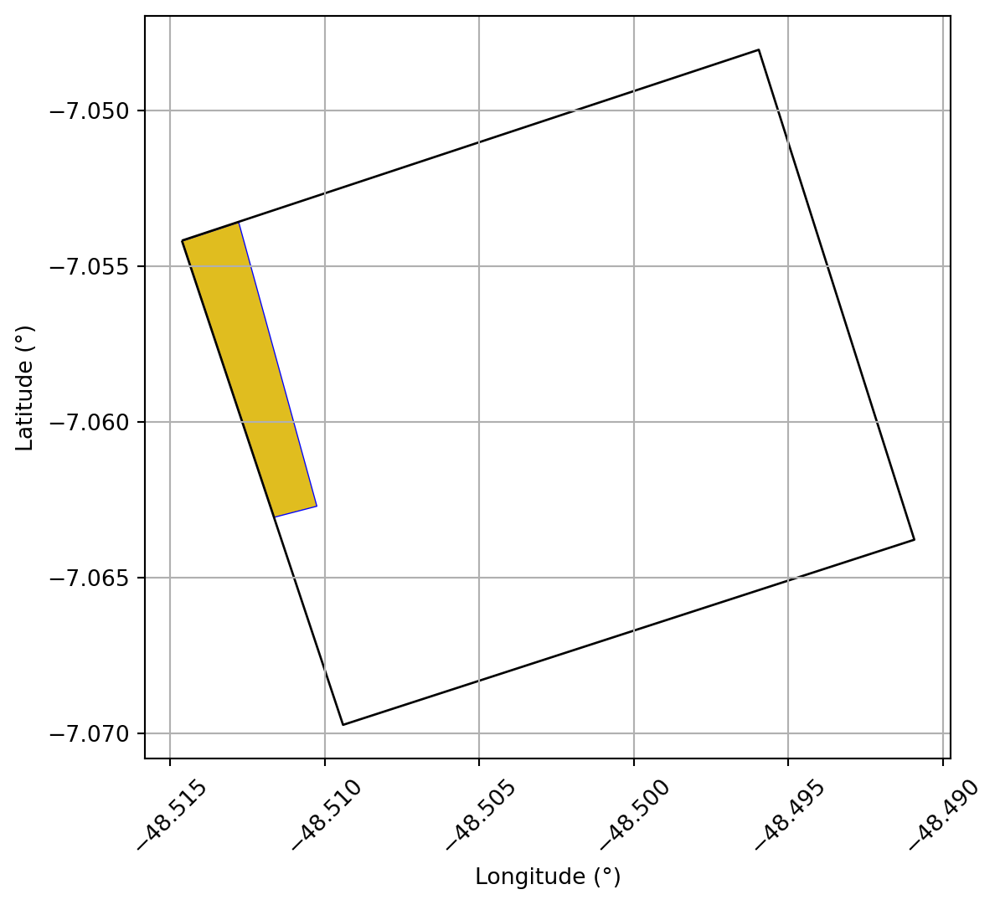
| Código SNCI | Área Sobreposta (ha) |
|---|---|
| 261202000014-96 | 19.3291 |
70.9 Gleba Analisada: LOT. MURICIZAL 2 ETAPA, LOTE 58
| Nome da Gleba | Área (ha) |
|---|---|
| LOT. MURICIZAL 2 ETAPA, LOTE 58 | 416.6024 |
70.9.1 Abrangência Municipal
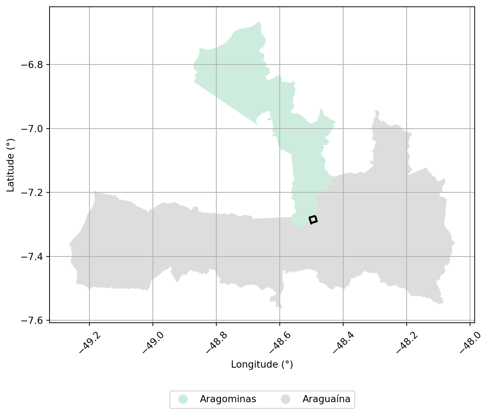
| Código da UF | Estado | UF | Código do Município | Nome do Município |
|---|---|---|---|---|
| 17.0000 | Tocantins | TO | 1701309 | Aragominas |
| 17.0000 | Tocantins | TO | 1702109 | Araguaína |
70.9.2 Unidades de Conservação
Não há sobreposição
70.9.3 Terras Indígenas
Não há sobreposição
70.9.4 Projetos de Assentamento
Não há sobreposição
70.9.5 Território Quilombola
Não há sobreposição
70.9.6 SIGEF
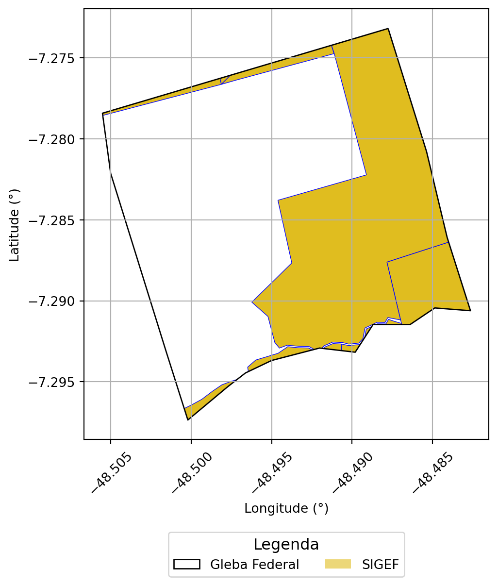
| Código SIGEF | Natureza do Polígono | Área Sobreposta (ha) |
|---|---|---|
| e4836d4e-611c-402b-8815-22596926c14a | Particular | 1.8538 |
| feebbb35-e0a8-4aab-9269-1007d3aa7d4e | Particular | 2.2666 |
| 99f8df42-c1a1-4715-afb6-1592ede46d3a | Particular | 0.8645 |
| 1e1a27bb-2e4a-4a35-8027-df13a01488b3 | Particular | 144.2369 |
| 571ce4d0-76be-4ca0-8a67-8a6825ac6fe1 | Particular | 2.4279 |
| 6c5404b3-35a9-4a98-91f0-e5e519a65e06 | Particular | 3.8749 |
| f50d020b-0015-4191-beb2-f5bfb3ea8f47 | Particular | 0.1572 |
| 747d0ea2-d468-486b-8cb9-91b6898d0b3b | Particular | 20.3243 |
70.9.7 SNCI
Não há sobreposição
70.10 Gleba Analisada: LOT. MURICIZAL 2 ETAPA, LOTE A
| Nome da Gleba | Área (ha) |
|---|---|
| LOT. MURICIZAL 2 ETAPA, LOTE A | 516.4805 |
70.10.1 Abrangência Municipal
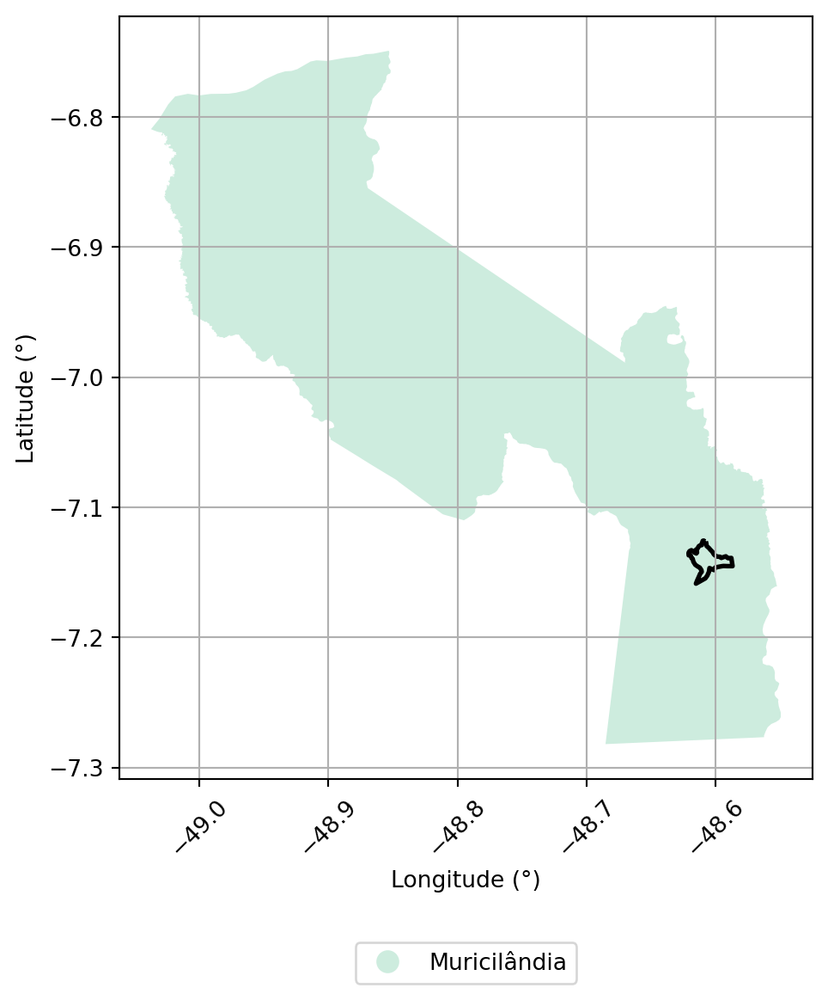
| Código da UF | Estado | UF | Código do Município | Nome do Município |
|---|---|---|---|---|
| 17.0000 | Tocantins | TO | 1713957 | Muricilândia |
70.10.2 Unidades de Conservação
Não há sobreposição
70.10.3 Terras Indígenas
Não há sobreposição
70.10.4 Projetos de Assentamento
Não há sobreposição
70.10.5 Território Quilombola
Não há sobreposição
70.10.6 SIGEF
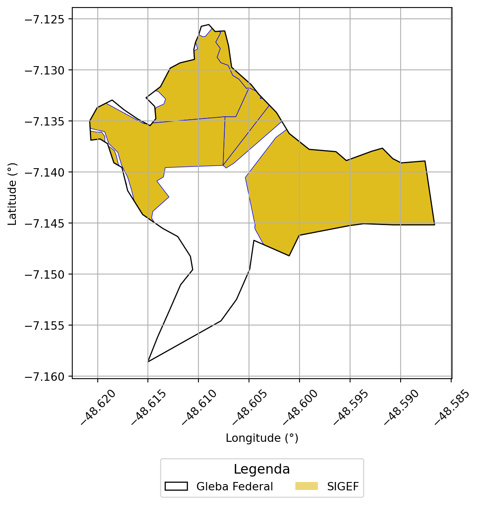
| Código SIGEF | Natureza do Polígono | Área Sobreposta (ha) |
|---|---|---|
| f94c2e20-9ddb-45c6-906f-6b4b773fa754 | Particular | 86.0987 |
| 78e229c4-0fcb-4b8c-8dfa-c82f36531e91 | Particular | 59.4138 |
| 41bd315e-7553-4386-a704-ec4894988347 | Particular | 5.7094 |
| a4013564-4b38-4cfb-a3da-ed602fbeaba3 | Particular | 17.1509 |
| 05c15164-323b-4458-ac50-897098e23d38 | Particular | 11.3747 |
| 84a66b12-7088-497a-8f7b-65ac68eeccd6 | Particular | 169.9099 |
70.10.7 SNCI
Não há sobreposição
70.11 Gleba Analisada: LOT. MURICIZAL, 2 ETAPA, LOTE A30
| Nome da Gleba | Área (ha) |
|---|---|
| LOT. MURICIZAL, 2 ETAPA, LOTE A30 | 23.9446 |
70.11.1 Abrangência Municipal

| Código da UF | Estado | UF | Código do Município | Nome do Município |
|---|---|---|---|---|
| 17.0000 | Tocantins | TO | 1713957 | Muricilândia |
70.11.2 Unidades de Conservação
Não há sobreposição
70.11.3 Terras Indígenas
Não há sobreposição
70.11.4 Projetos de Assentamento
Não há sobreposição
70.11.5 Território Quilombola
Não há sobreposição
70.11.6 SIGEF
Não há sobreposição
70.11.7 SNCI
Não há sobreposição
70.12 Gleba Analisada: LOT. MURICIZAL, 2 ETAPA, LOTE A31
| Nome da Gleba | Área (ha) |
|---|---|
| LOT. MURICIZAL, 2 ETAPA, LOTE A31 | 16.8855 |
70.12.1 Abrangência Municipal
| Código da UF | Estado | UF | Código do Município | Nome do Município |
|---|---|---|---|---|
| 17.0000 | Tocantins | TO | 1713957 | Muricilândia |
70.12.2 Unidades de Conservação
Não há sobreposição
70.12.3 Terras Indígenas
Não há sobreposição
70.12.4 Projetos de Assentamento
Não há sobreposição
70.12.5 Território Quilombola
Não há sobreposição
70.12.6 SIGEF
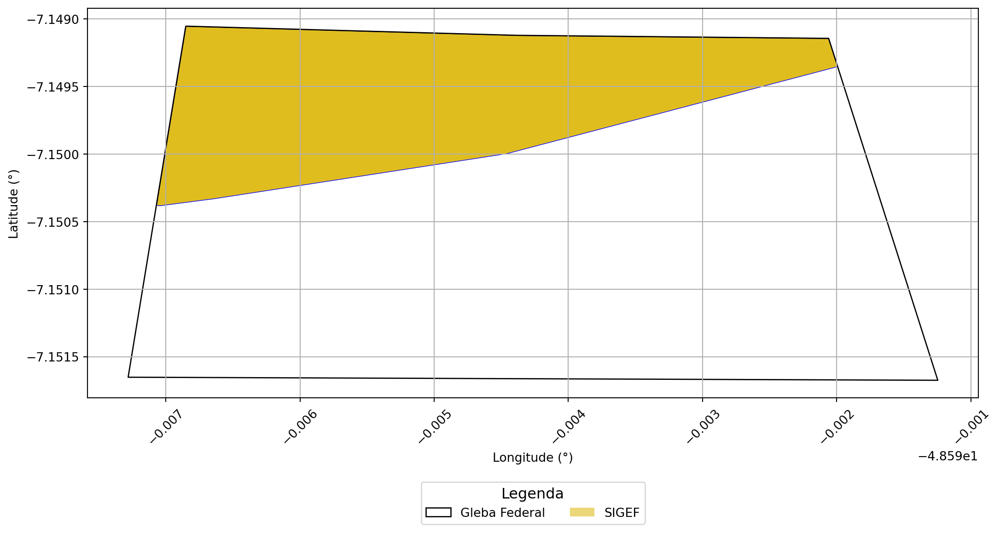
| Código SIGEF | Natureza do Polígono | Área Sobreposta (ha) |
|---|---|---|
| 84a66b12-7088-497a-8f7b-65ac68eeccd6 | Particular | 5.0085 |
70.12.7 SNCI
Não há sobreposição
70.13 Gleba Analisada: LOT. MURICIZAL, 2 ETAPA, LOTE A36
| Nome da Gleba | Área (ha) |
|---|---|
| LOT. MURICIZAL, 2 ETAPA, LOTE A36 | 41.9233 |
70.13.1 Abrangência Municipal
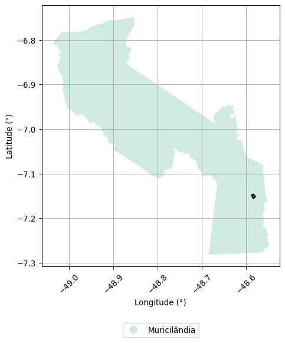
| Código da UF | Estado | UF | Código do Município | Nome do Município |
|---|---|---|---|---|
| 17.0000 | Tocantins | TO | 1713957 | Muricilândia |
70.13.2 Unidades de Conservação
Não há sobreposição
70.13.3 Terras Indígenas
Não há sobreposição
70.13.4 Projetos de Assentamento
Não há sobreposição
70.13.5 Território Quilombola
Não há sobreposição
70.13.6 SIGEF
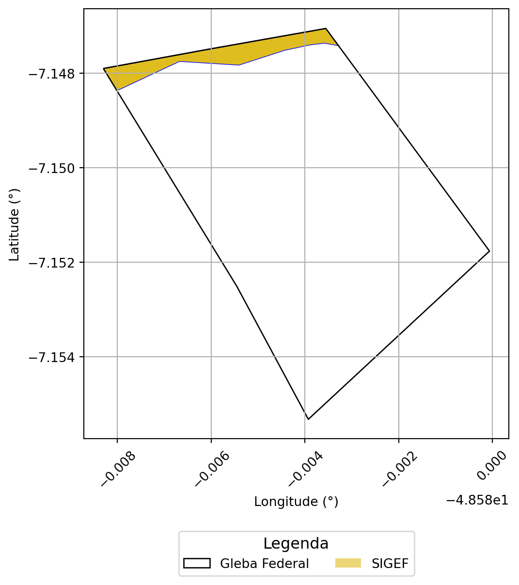
| Código SIGEF | Natureza do Polígono | Área Sobreposta (ha) |
|---|---|---|
| 84a66b12-7088-497a-8f7b-65ac68eeccd6 | Particular | 1.9006 |
70.13.7 SNCI
Não há sobreposição
70.14 Gleba Analisada: LOT. MURICIZAL, 2 ETAPA, LOTE A40
| Nome da Gleba | Área (ha) |
|---|---|
| LOT. MURICIZAL, 2 ETAPA, LOTE A40 | 7.9788 |
70.14.1 Abrangência Municipal
| Código da UF | Estado | UF | Código do Município | Nome do Município |
|---|---|---|---|---|
| 17.0000 | Tocantins | TO | 1713957 | Muricilândia |
70.14.2 Unidades de Conservação
Não há sobreposição
70.14.3 Terras Indígenas
Não há sobreposição
70.14.4 Projetos de Assentamento
Não há sobreposição
70.14.5 Território Quilombola
Não há sobreposição
70.14.6 SIGEF
Não há sobreposição
70.14.7 SNCI
Não há sobreposição
70.15 Gleba Analisada: LOT. MURICIZAL, 2 ETAPA, LOTE A42
| Nome da Gleba | Área (ha) |
|---|---|
| LOT. MURICIZAL, 2 ETAPA, LOTE A42 | 45.7618 |
70.15.1 Abrangência Municipal
| Código da UF | Estado | UF | Código do Município | Nome do Município |
|---|---|---|---|---|
| 17.0000 | Tocantins | TO | 1713957 | Muricilândia |
70.15.2 Unidades de Conservação
Não há sobreposição
70.15.3 Terras Indígenas
Não há sobreposição
70.15.4 Projetos de Assentamento
Não há sobreposição
70.15.5 Território Quilombola
Não há sobreposição
70.15.6 SIGEF
Não há sobreposição
70.15.7 SNCI
Não há sobreposição
70.16 Gleba Analisada: LOT. MURICIZAL, 2 ETAPA, LOTE A43
| Nome da Gleba | Área (ha) |
|---|---|
| LOT. MURICIZAL, 2 ETAPA, LOTE A43 | 22.2673 |
70.16.1 Abrangência Municipal
| Código da UF | Estado | UF | Código do Município | Nome do Município |
|---|---|---|---|---|
| 17.0000 | Tocantins | TO | 1713957 | Muricilândia |
70.16.2 Unidades de Conservação
Não há sobreposição
70.16.3 Terras Indígenas
Não há sobreposição
70.16.4 Projetos de Assentamento
Não há sobreposição
70.16.5 Território Quilombola
Não há sobreposição
70.16.6 SIGEF
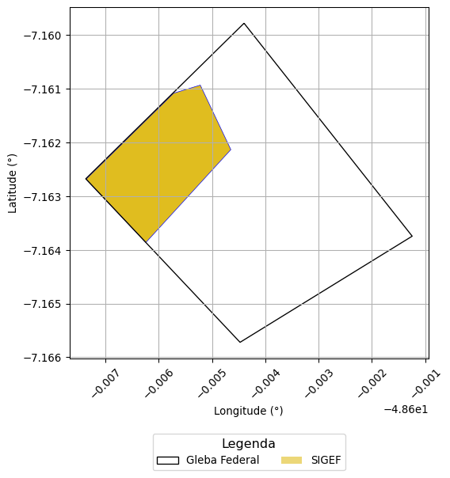
| Código SIGEF | Natureza do Polígono | Área Sobreposta (ha) |
|---|---|---|
| 59aa2e4b-3e93-45ab-9c2b-e19771350f34 | Particular | 4.8741 |
70.16.7 SNCI
Não há sobreposição
70.17 Gleba Analisada: LOT. MURICIZAL, 2 ETAPA, LOTE A44
| Nome da Gleba | Área (ha) |
|---|---|
| LOT. MURICIZAL, 2 ETAPA, LOTE A44 | 31.4604 |
70.17.1 Abrangência Municipal
| Código da UF | Estado | UF | Código do Município | Nome do Município |
|---|---|---|---|---|
| 17.0000 | Tocantins | TO | 1713957 | Muricilândia |
70.17.2 Unidades de Conservação
Não há sobreposição
70.17.3 Terras Indígenas
Não há sobreposição
70.17.4 Projetos de Assentamento
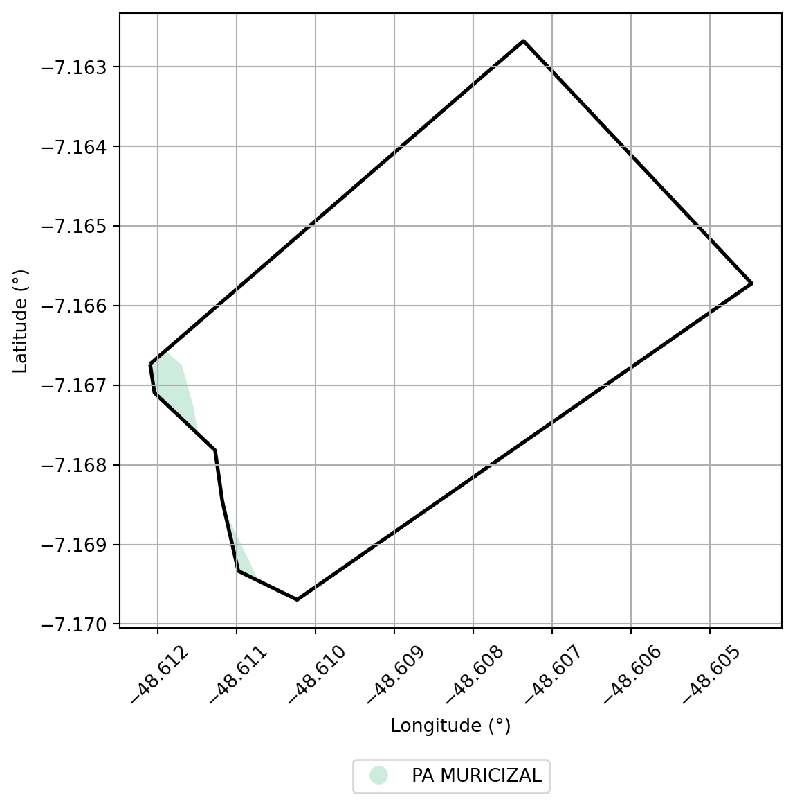
| SIPRA | Nome | Município | Área Sobreposta (ha) |
|---|---|---|---|
| TO0046000 | PA MURICIZAL | SANTA FE DO ARAGUAIA | 0.4807 |
70.17.5 Território Quilombola
Não há sobreposição
70.17.6 SIGEF
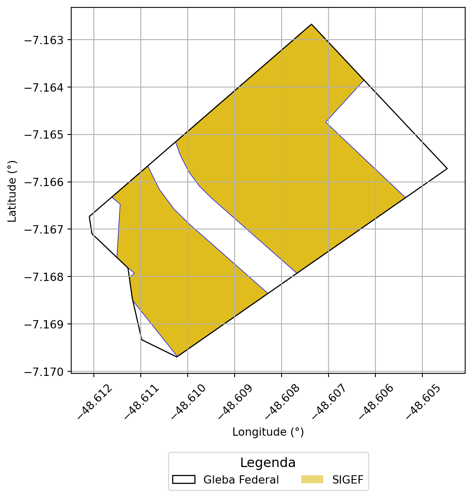
| Código SIGEF | Natureza do Polígono | Área Sobreposta (ha) |
|---|---|---|
| 7c62c73a-5022-44a8-bc36-e587eaf2a89e | Particular | 7.7744 |
| 59aa2e4b-3e93-45ab-9c2b-e19771350f34 | Particular | 16.0492 |
70.17.7 SNCI
Não há sobreposição
70.18 Gleba Analisada: LOT. MURICIZAL, 2 ETAPA, LOTE A47
| Nome da Gleba | Área (ha) |
|---|---|
| LOT. MURICIZAL, 2 ETAPA, LOTE A47 | 8.0898 |
70.18.1 Abrangência Municipal
| Código da UF | Estado | UF | Código do Município | Nome do Município |
|---|---|---|---|---|
| 17.0000 | Tocantins | TO | 1713957 | Muricilândia |
70.18.2 Unidades de Conservação
Não há sobreposição
70.18.3 Terras Indígenas
Não há sobreposição
70.18.4 Projetos de Assentamento
Não há sobreposição
70.18.5 Território Quilombola
Não há sobreposição
70.18.6 SIGEF
Não há sobreposição
70.18.7 SNCI
Não há sobreposição
70.19 Gleba Analisada: LOT. MURICIZAL, 2 ETAPA, LOTE A49
| Nome da Gleba | Área (ha) |
|---|---|
| LOT. MURICIZAL, 2 ETAPA, LOTE A49 | 36.4319 |
70.19.1 Abrangência Municipal
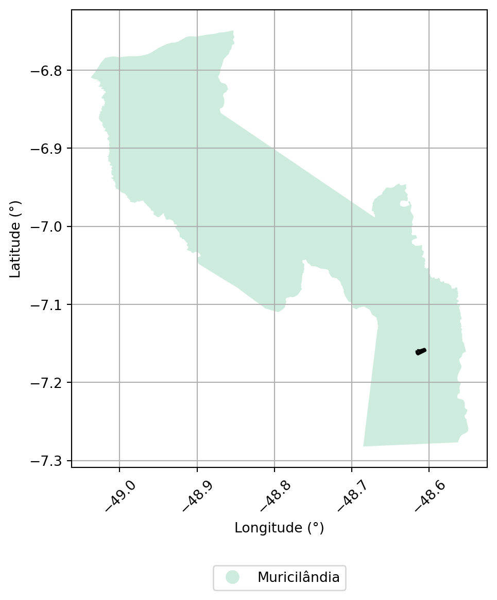
| Código da UF | Estado | UF | Código do Município | Nome do Município |
|---|---|---|---|---|
| 17.0000 | Tocantins | TO | 1713957 | Muricilândia |
70.19.2 Unidades de Conservação
Não há sobreposição
70.19.3 Terras Indígenas
Não há sobreposição
70.19.4 Projetos de Assentamento
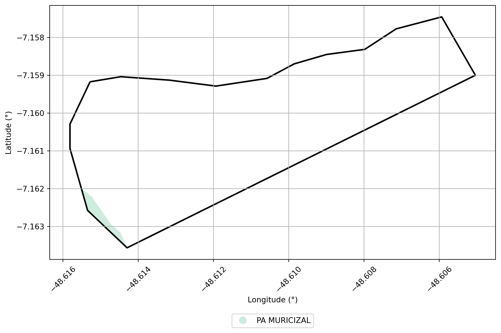
| SIPRA | Nome | Município | Área Sobreposta (ha) |
|---|---|---|---|
| TO0046000 | PA MURICIZAL | SANTA FE DO ARAGUAIA | 0.4199 |
70.19.5 Território Quilombola
Não há sobreposição
70.19.6 SIGEF
Não há sobreposição
70.19.7 SNCI
Não há sobreposição
70.20 Gleba Analisada: LOT. MURICIZAL, 2 ETAPA, LOTE A55
| Nome da Gleba | Área (ha) |
|---|---|
| LOT. MURICIZAL, 2 ETAPA, LOTE A55 | 88.6389 |
70.20.1 Abrangência Municipal
| Código da UF | Estado | UF | Código do Município | Nome do Município |
|---|---|---|---|---|
| 17.0000 | Tocantins | TO | 1713957 | Muricilândia |
70.20.2 Unidades de Conservação
Não há sobreposição
70.20.3 Terras Indígenas
Não há sobreposição
70.20.4 Projetos de Assentamento
Não há sobreposição
70.20.5 Território Quilombola
Não há sobreposição
70.20.6 SIGEF
Não há sobreposição
70.20.7 SNCI
Não há sobreposição
70.21 Gleba Analisada: LOT. MURICIZAL, GLEBA 05, LOTE 40
| Nome da Gleba | Área (ha) |
|---|---|
| LOT. MURICIZAL, GLEBA 05, LOTE 40 | 125.7535 |
70.21.1 Abrangência Municipal
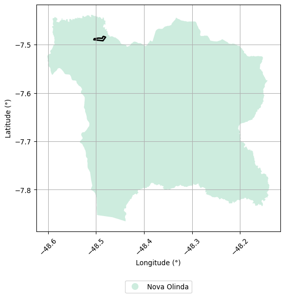
| Código da UF | Estado | UF | Código do Município | Nome do Município |
|---|---|---|---|---|
| 17.0000 | Tocantins | TO | 1714880 | Nova Olinda |
70.21.2 Unidades de Conservação
Não há sobreposição
70.21.3 Terras Indígenas
Não há sobreposição
70.21.4 Projetos de Assentamento
Não há sobreposição
70.21.5 Território Quilombola
Não há sobreposição
70.21.6 SIGEF
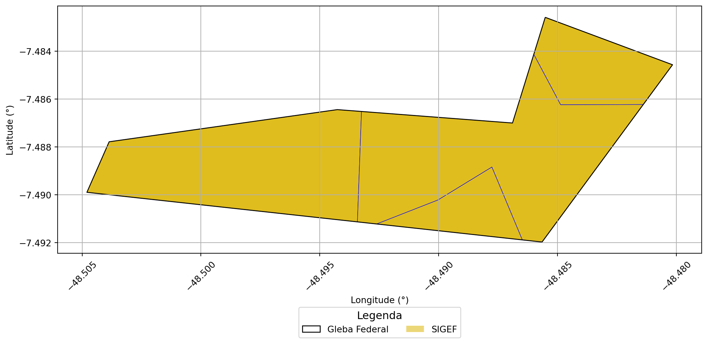
| Código SIGEF | Natureza do Polígono | Área Sobreposta (ha) |
|---|---|---|
| 89c0d61f-bced-43e6-87dd-9e5cc50ed2c1 | Particular | 16.4486 |
| eb730559-1995-47d6-8dbd-03d31754b1e1 | Particular | 46.6600 |
| 059551fd-99bd-43e3-bdae-f382a092b54a | Particular | 53.0691 |
| e1f16660-695b-4ec6-bb53-eedfa21ed197 | Particular | 10.1514 |
70.21.7 SNCI
Não há sobreposição
70.22 Gleba Analisada: LOT. MURICIZAL, GLEBA 05, LOTE 41A
| Nome da Gleba | Área (ha) |
|---|---|
| LOT. MURICIZAL, GLEBA 05, LOTE 41A | 69.4947 |
70.22.1 Abrangência Municipal
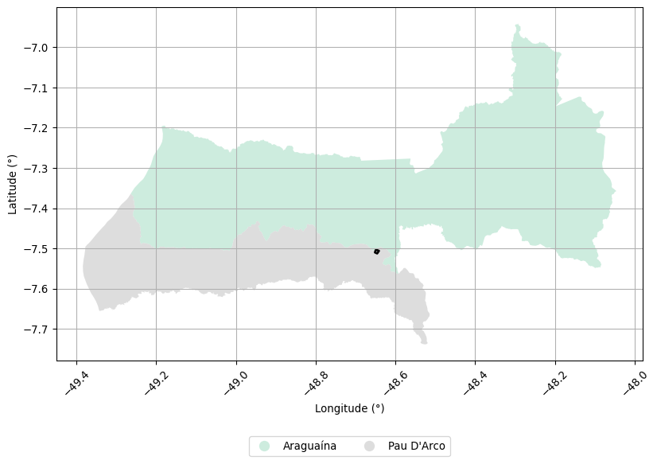
| Código da UF | Estado | UF | Código do Município | Nome do Município |
|---|---|---|---|---|
| 17.0000 | Tocantins | TO | 1702109 | Araguaína |
| 17.0000 | Tocantins | TO | 1716307 | Pau D'Arco |
70.22.2 Unidades de Conservação
Não há sobreposição
70.22.3 Terras Indígenas
Não há sobreposição
70.22.4 Projetos de Assentamento
Não há sobreposição
70.22.5 Território Quilombola
Não há sobreposição
70.22.6 SIGEF
Não há sobreposição
70.22.7 SNCI
Não há sobreposição
70.23 Gleba Analisada: LOT. MURICIZAL, GLEBA 06, LOTE 09
| Nome da Gleba | Área (ha) |
|---|---|
| LOT. MURICIZAL, GLEBA 06, LOTE 09 | 458.1984 |
70.23.1 Abrangência Municipal
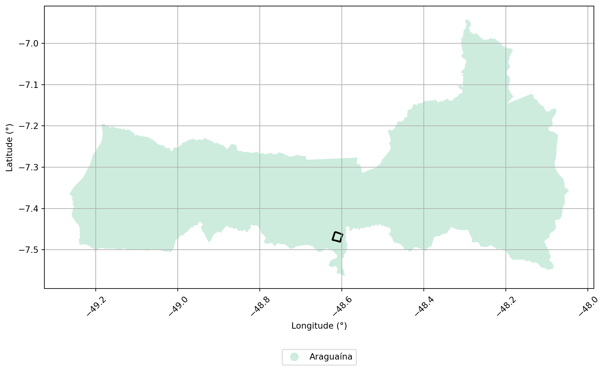
| Código da UF | Estado | UF | Código do Município | Nome do Município |
|---|---|---|---|---|
| 17.0000 | Tocantins | TO | 1702109 | Araguaína |
70.23.2 Unidades de Conservação
Não há sobreposição
70.23.3 Terras Indígenas
Não há sobreposição
70.23.4 Projetos de Assentamento
Não há sobreposição
70.23.5 Território Quilombola
Não há sobreposição
70.23.6 SIGEF
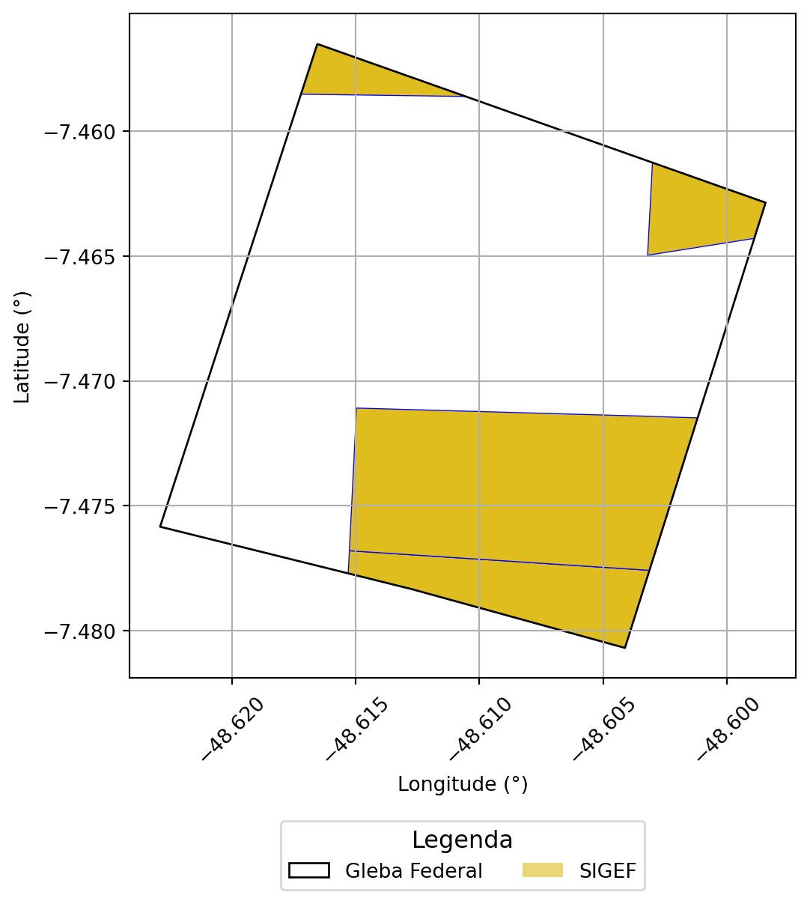
| Código SIGEF | Natureza do Polígono | Área Sobreposta (ha) |
|---|---|---|
| 3453215f-8c97-4258-bb3a-aa716b2dfe08 | Particular | 8.2447 |
| 587915eb-e82d-4325-8842-59d9cb33cae3 | Particular | 14.1879 |
| 977cc24d-771b-4075-a05a-12e3a8ec8245 | Particular | 29.5051 |
| ec6eadef-b478-4318-aab2-9ae5be08b88b | Particular | 94.7302 |
70.23.7 SNCI
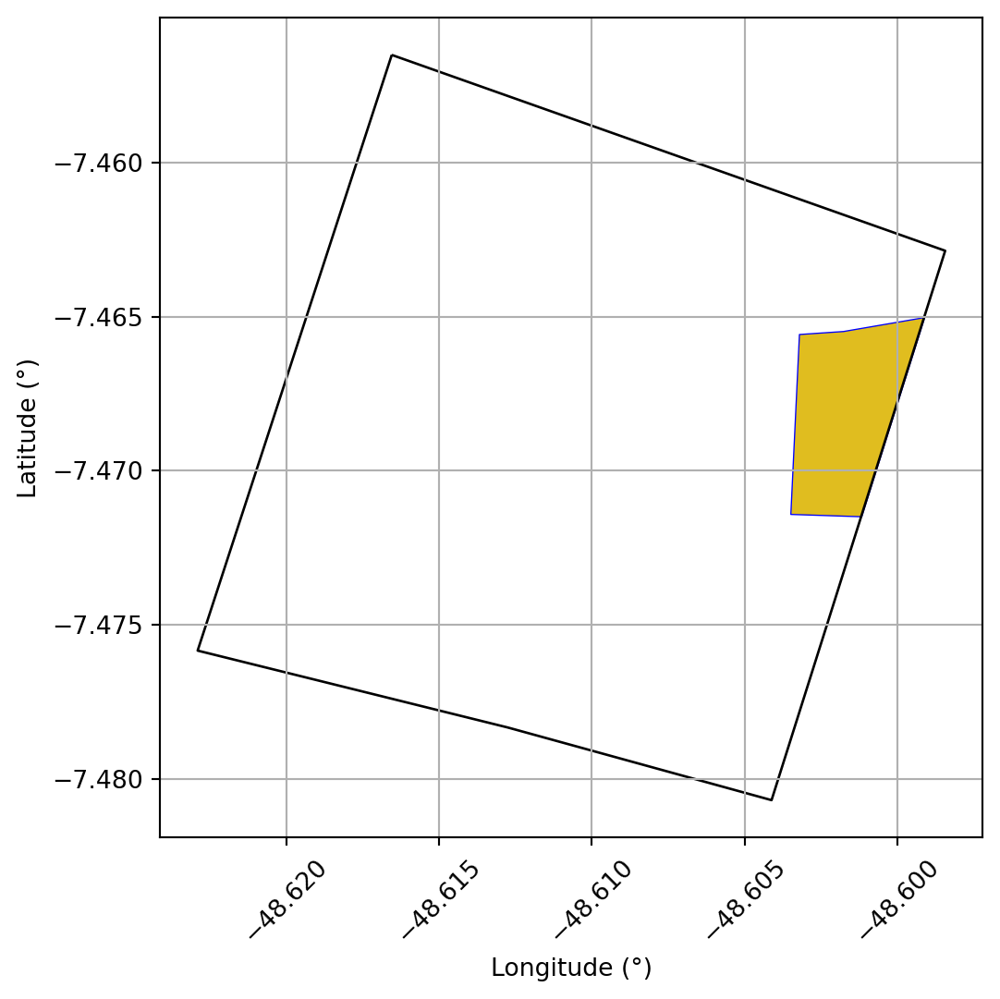
| Código SNCI | Área Sobreposta (ha) |
|---|---|
| 261307000086-83 | 23.6250 |
70.24 Gleba Analisada: LOT. MURICIZAL, GLEBA 06, LOTE 10
| Nome da Gleba | Área (ha) |
|---|---|
| LOT. MURICIZAL, GLEBA 06, LOTE 10 | 1190.6791 |
70.24.1 Abrangência Municipal
| Código da UF | Estado | UF | Código do Município | Nome do Município |
|---|---|---|---|---|
| 17.0000 | Tocantins | TO | 1702109 | Araguaína |
70.24.2 Unidades de Conservação
Não há sobreposição
70.24.3 Terras Indígenas
Não há sobreposição
70.24.4 Projetos de Assentamento
Não há sobreposição
70.24.5 Território Quilombola
Não há sobreposição
70.24.6 SIGEF
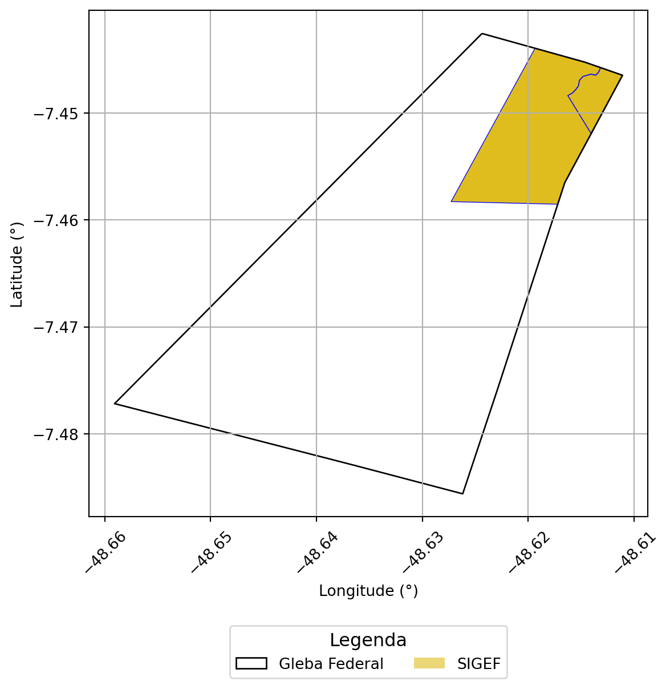
| Código SIGEF | Natureza do Polígono | Área Sobreposta (ha) |
|---|---|---|
| 3453215f-8c97-4258-bb3a-aa716b2dfe08 | Particular | 139.5143 |
| 587915eb-e82d-4325-8842-59d9cb33cae3 | Particular | 18.8021 |
70.24.7 SNCI
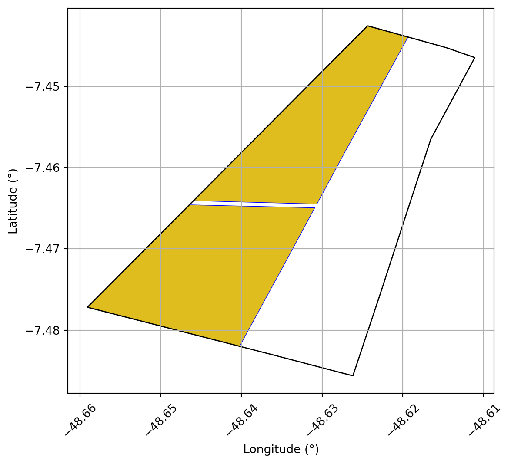
| Código SNCI | Área Sobreposta (ha) |
|---|---|
| 260712000008-03 | 347.4370 |
| 260705000024-80 | 279.2129 |
70.25 Gleba Analisada: LOT. MURICIZAL, GLEBA 06, LOTE 27
| Nome da Gleba | Área (ha) |
|---|---|
| LOT. MURICIZAL, GLEBA 06, LOTE 27 | 264.2109 |
70.25.1 Abrangência Municipal
| Código da UF | Estado | UF | Código do Município | Nome do Município |
|---|---|---|---|---|
| 17.0000 | Tocantins | TO | 1702109 | Araguaína |
70.25.2 Unidades de Conservação
Não há sobreposição
70.25.3 Terras Indígenas
Não há sobreposição
70.25.4 Projetos de Assentamento
Não há sobreposição
70.25.5 Território Quilombola
Não há sobreposição
70.25.6 SIGEF
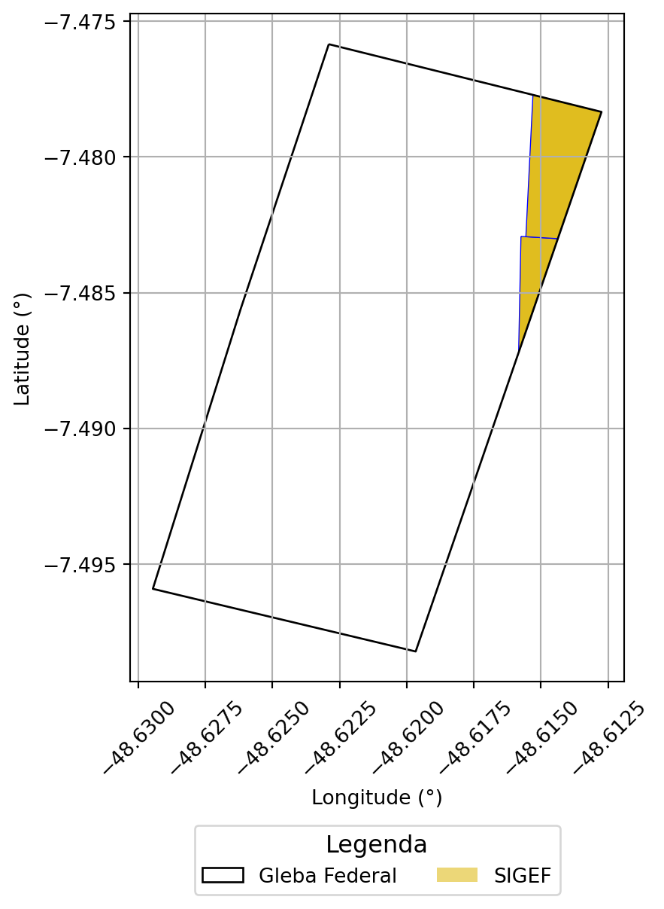
| Código SIGEF | Natureza do Polígono | Área Sobreposta (ha) |
|---|---|---|
| ed8cbb98-af35-4ed0-af89-3c7b9ee31d3c | Particular | 3.6120 |
| 977cc24d-771b-4075-a05a-12e3a8ec8245 | Particular | 11.7712 |
70.25.7 SNCI
Não há sobreposição
70.26 Gleba Analisada: LOT. MURICIZAL, GLEBA 06, LOTE 28
| Nome da Gleba | Área (ha) |
|---|---|
| LOT. MURICIZAL, GLEBA 06, LOTE 28 | 701.2556 |
70.26.1 Abrangência Municipal
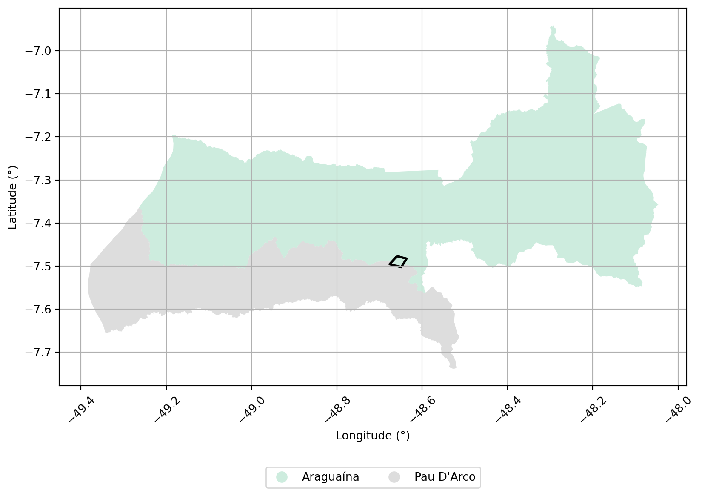
| Código da UF | Estado | UF | Código do Município | Nome do Município |
|---|---|---|---|---|
| 17.0000 | Tocantins | TO | 1702109 | Araguaína |
| 17.0000 | Tocantins | TO | 1716307 | Pau D'Arco |
70.26.2 Unidades de Conservação
Não há sobreposição
70.26.3 Terras Indígenas
Não há sobreposição
70.26.4 Projetos de Assentamento
Não há sobreposição
70.26.5 Território Quilombola
Não há sobreposição
70.26.6 SIGEF
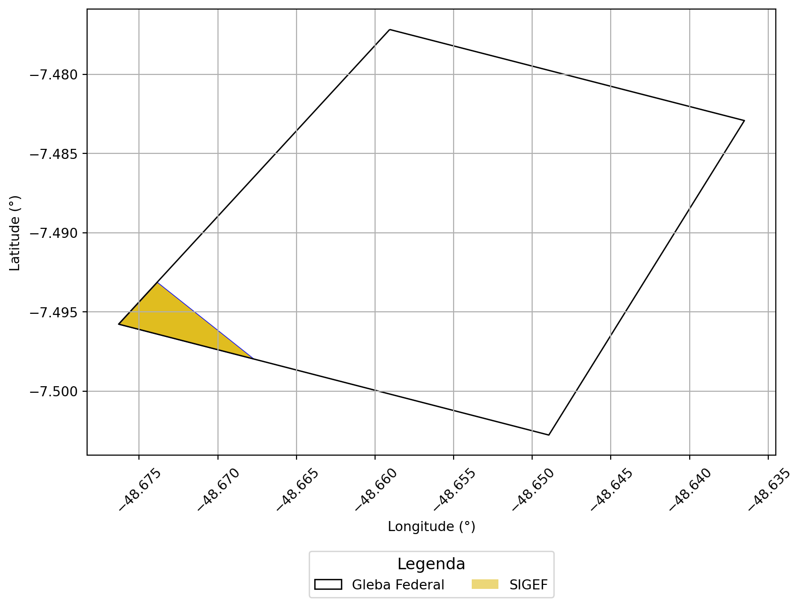
| Código SIGEF | Natureza do Polígono | Área Sobreposta (ha) |
|---|---|---|
| f12e520c-ba20-42b3-9d92-2b55d7bfe323 | Particular | 17.3256 |
70.26.7 SNCI
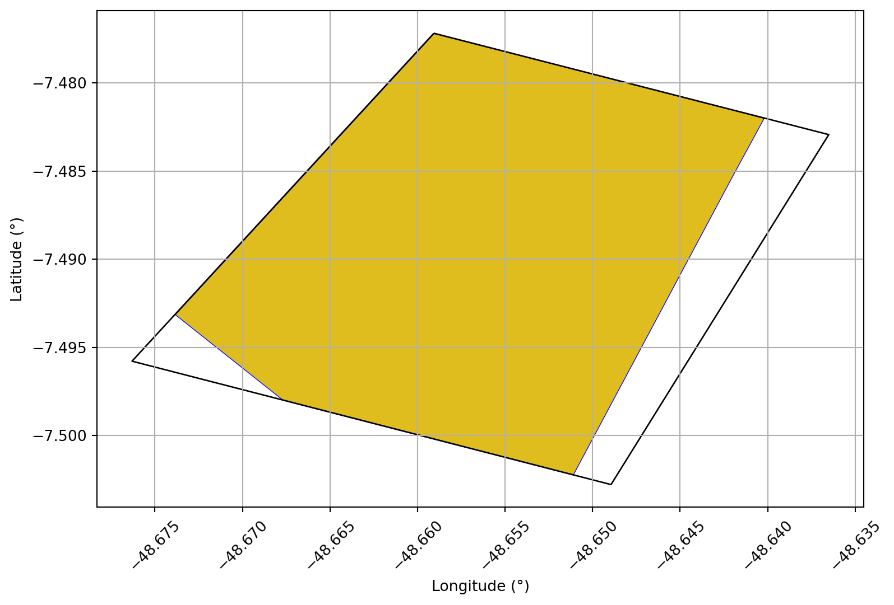
| Código SNCI | Área Sobreposta (ha) |
|---|---|
| 260712000008-03 | 603.7246 |
70.27 Gleba Analisada: LOT. MURICIZAL, GLEBA 06, LOTE 34
| Nome da Gleba | Área (ha) |
|---|---|
| LOT. MURICIZAL, GLEBA 06, LOTE 34 | 433.7814 |
70.27.1 Abrangência Municipal
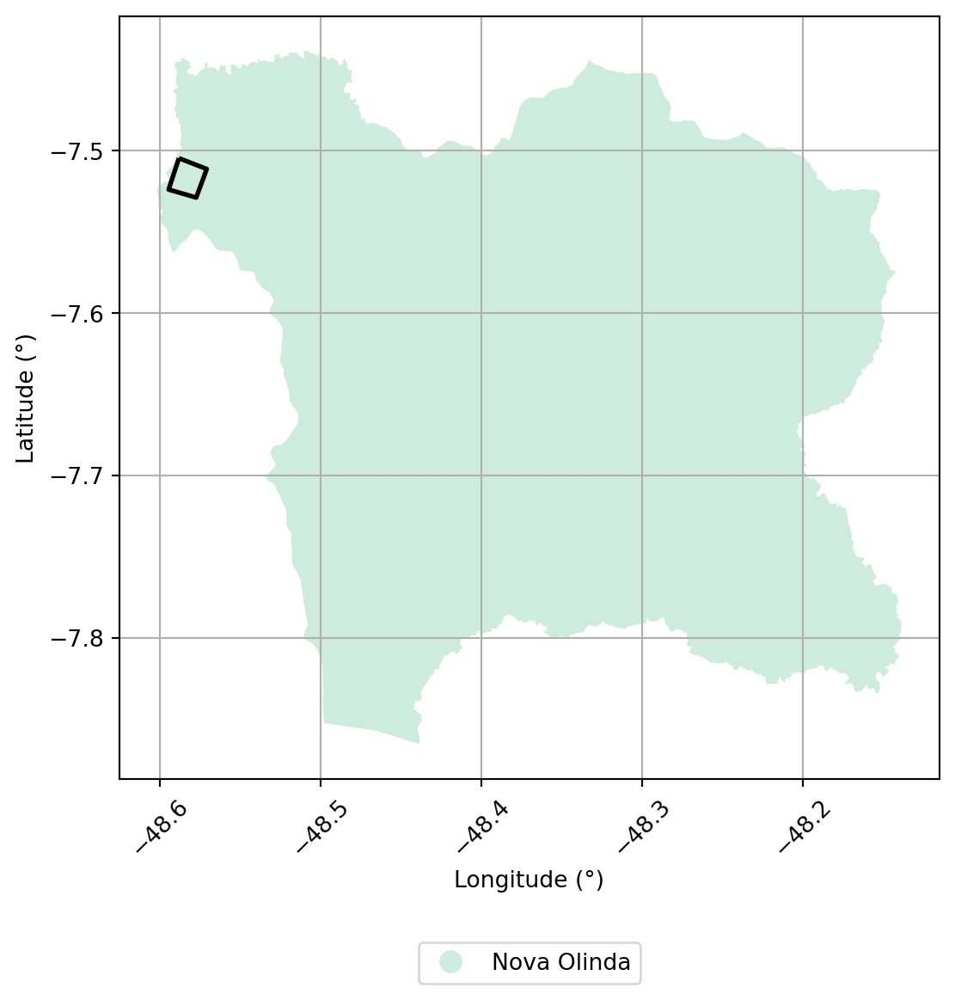
| Código da UF | Estado | UF | Código do Município | Nome do Município |
|---|---|---|---|---|
| 17.0000 | Tocantins | TO | 1714880 | Nova Olinda |
70.27.2 Unidades de Conservação
Não há sobreposição
70.27.3 Terras Indígenas
Não há sobreposição
70.27.4 Projetos de Assentamento
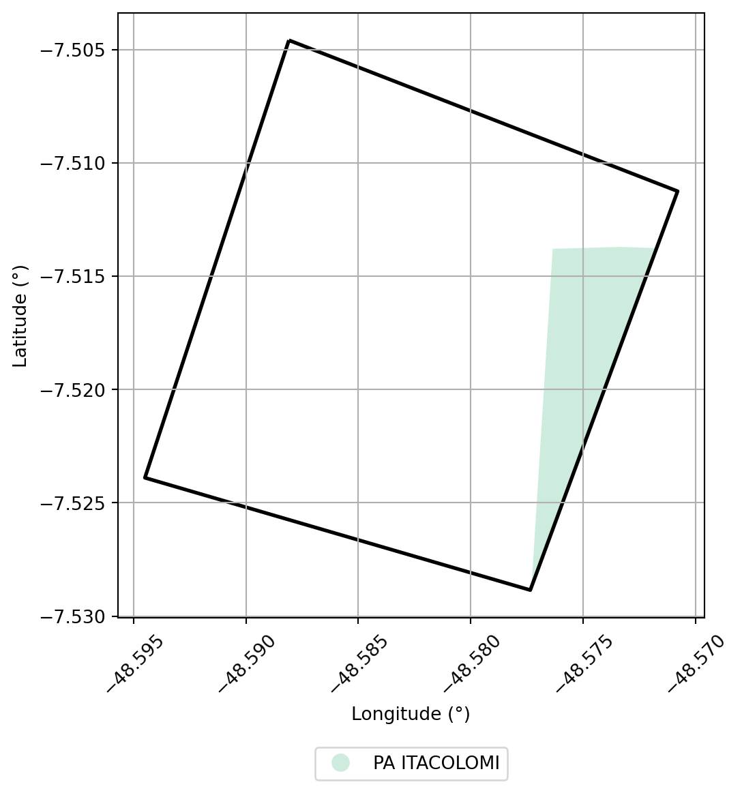
| SIPRA | Nome | Município | Área Sobreposta (ha) |
|---|---|---|---|
| TO0268000 | PA ITACOLOMI | NOVA OLINDA | 42.4395 |
70.27.5 Território Quilombola
Não há sobreposição
70.27.6 SIGEF
| Código SIGEF | Natureza do Polígono | Área Sobreposta (ha) |
|---|---|---|
| 82591154-acbe-4684-91ba-36ca49375e39 | Particular | 255.7946 |
| 0f0a40f4-6616-4c7f-b648-354aef889e53 | Particular | 53.8937 |
70.27.7 SNCI
Não há sobreposição
70.28 Gleba Analisada: LOT. MURICIZAL, GLEBA 06, LOTE 44
| Nome da Gleba | Área (ha) |
|---|---|
| LOT. MURICIZAL, GLEBA 06, LOTE 44 | 10002.8360 |
70.28.1 Abrangência Municipal
| Código da UF | Estado | UF | Código do Município | Nome do Município |
|---|---|---|---|---|
| 17.0000 | Tocantins | TO | 1702109 | Araguaína |
| 17.0000 | Tocantins | TO | 1713957 | Muricilândia |
70.28.2 Unidades de Conservação
Não há sobreposição
70.28.3 Terras Indígenas
Não há sobreposição
70.28.4 Projetos de Assentamento
| SIPRA | Nome | Município | Área Sobreposta (ha) |
|---|---|---|---|
| TO0041000 | PA RIO PRETO | ARAGUAINA | 3832.3144 |
| TO0451000 | PA MANOEL ALVES | ARAGUAINA | 22.1485 |
70.28.5 Território Quilombola
Não há sobreposição
70.28.6 SIGEF
| Código SIGEF | Natureza do Polígono | Área Sobreposta (ha) |
|---|---|---|
| dbfada2d-73a0-4375-80c1-ce7897100dbe | Particular | 17.0670 |
| 00fa9fe5-028c-4b81-95ce-dd9e362076b0 | Particular | 615.3689 |
| de01b2ba-9a9f-4011-a15b-9d925ba88663 | Particular | 715.6362 |
| b9164022-a045-49fc-a971-ce51578963c0 | Particular | 7.6935 |
| a30cc240-11e3-49d5-ba2e-020370631418 | Particular | 197.0860 |
| 13592b84-45e0-4c76-aad4-6f21753d6b89 | Particular | 416.5518 |
| 1438e17b-96d7-4c14-b2a7-2d86ae21d267 | Particular | 3.6900 |
| 2b9b802a-297b-4040-9e10-70a9545dbe0f | Particular | 2538.5360 |
70.28.7 SNCI
| Código SNCI | Área Sobreposta (ha) |
|---|---|
| 260705000024-80 | 1561.2717 |
70.29 Gleba Analisada: LOT. MURICIZAL, GLEBA 4, LOTE 57
| Nome da Gleba | Área (ha) |
|---|---|
| LOT. MURICIZAL, GLEBA 4, LOTE 57 | 485.6906 |
70.29.1 Abrangência Municipal
| Código da UF | Estado | UF | Código do Município | Nome do Município |
|---|---|---|---|---|
| 17.0000 | Tocantins | TO | 1702109 | Araguaína |
| 17.0000 | Tocantins | TO | 1714880 | Nova Olinda |
70.29.2 Unidades de Conservação
Não há sobreposição
70.29.3 Terras Indígenas
Não há sobreposição
70.29.4 Projetos de Assentamento
Não há sobreposição
70.29.5 Território Quilombola
Não há sobreposição
70.29.6 SIGEF
| Código SIGEF | Natureza do Polígono | Área Sobreposta (ha) |
|---|---|---|
| dffb5619-167b-4179-be70-88813a911244 | Particular | 25.6683 |
| ff5546c1-584e-4f4a-8f56-16c922c47d81 | Particular | 11.3579 |
| 0f0a40f4-6616-4c7f-b648-354aef889e53 | Particular | 2.2700 |
70.29.7 SNCI
Não há sobreposição
70.30 Gleba Analisada: LOT. MURICIZAL, GLEBA 4, LOTE 58
| Nome da Gleba | Área (ha) |
|---|---|
| LOT. MURICIZAL, GLEBA 4, LOTE 58 | 444.3733 |
70.30.1 Abrangência Municipal
| Código da UF | Estado | UF | Código do Município | Nome do Município |
|---|---|---|---|---|
| 17.0000 | Tocantins | TO | 1714880 | Nova Olinda |
70.30.2 Unidades de Conservação
Não há sobreposição
70.30.3 Terras Indígenas
Não há sobreposição
70.30.4 Projetos de Assentamento
| SIPRA | Nome | Município | Área Sobreposta (ha) |
|---|---|---|---|
| TO0268000 | PA ITACOLOMI | NOVA OLINDA | 310.7988 |
70.30.5 Território Quilombola
Não há sobreposição
70.30.6 SIGEF
| Código SIGEF | Natureza do Polígono | Área Sobreposta (ha) |
|---|---|---|
| 55072bfc-9739-4499-a257-2a474478e15a | Particular | 0.4491 |
| 9a5043ba-26f8-4aa3-a20d-b732a3370c6b | Particular | 63.2501 |
70.30.7 SNCI
Não há sobreposição
70.31 Gleba Analisada: LOT. MURICIZAL, GLEBA 4, LOTE 58
| Nome da Gleba | Área (ha) |
|---|---|
| LOT. MURICIZAL, GLEBA 4, LOTE 58 | 482.9990 |
70.31.1 Abrangência Municipal
| Código da UF | Estado | UF | Código do Município | Nome do Município |
|---|---|---|---|---|
| 17.0000 | Tocantins | TO | 1714880 | Nova Olinda |
70.31.2 Unidades de Conservação
Não há sobreposição
70.31.3 Terras Indígenas
Não há sobreposição
70.31.4 Projetos de Assentamento
Não há sobreposição
70.31.5 Território Quilombola
Não há sobreposição
70.31.6 SIGEF
| Código SIGEF | Natureza do Polígono | Área Sobreposta (ha) |
|---|---|---|
| ff5546c1-584e-4f4a-8f56-16c922c47d81 | Particular | 19.4359 |
| 55072bfc-9739-4499-a257-2a474478e15a | Particular | 220.0885 |
70.31.7 SNCI
Não há sobreposição
70.32 Gleba Analisada: LOT. MURICIZAL, GLEBA 4, LOTE 60
| Nome da Gleba | Área (ha) |
|---|---|
| LOT. MURICIZAL, GLEBA 4, LOTE 60 | 78.4342 |
70.32.1 Abrangência Municipal
| Código da UF | Estado | UF | Código do Município | Nome do Município |
|---|---|---|---|---|
| 17.0000 | Tocantins | TO | 1714880 | Nova Olinda |
70.32.2 Unidades de Conservação
Não há sobreposição
70.32.3 Terras Indígenas
Não há sobreposição
70.32.4 Projetos de Assentamento
Não há sobreposição
70.32.5 Território Quilombola
Não há sobreposição
70.32.6 SIGEF
| Código SIGEF | Natureza do Polígono | Área Sobreposta (ha) |
|---|---|---|
| 55072bfc-9739-4499-a257-2a474478e15a | Particular | 28.7403 |
70.32.7 SNCI
Não há sobreposição
70.33 Gleba Analisada: LOT. MURICIZAL, GLEBA 6, LOTE 10A
| Nome da Gleba | Área (ha) |
|---|---|
| LOT. MURICIZAL, GLEBA 6, LOTE 10A | 817.2455 |
70.33.1 Abrangência Municipal
| Código da UF | Estado | UF | Código do Município | Nome do Município |
|---|---|---|---|---|
| 17.0000 | Tocantins | TO | 1702109 | Araguaína |
| 17.0000 | Tocantins | TO | 1714880 | Nova Olinda |
70.33.2 Unidades de Conservação
Não há sobreposição
70.33.3 Terras Indígenas
Não há sobreposição
70.33.4 Projetos de Assentamento
Não há sobreposição
70.33.5 Território Quilombola
Não há sobreposição
70.33.6 SIGEF
| Código SIGEF | Natureza do Polígono | Área Sobreposta (ha) |
|---|---|---|
| 3453215f-8c97-4258-bb3a-aa716b2dfe08 | Particular | 91.7807 |
| 587915eb-e82d-4325-8842-59d9cb33cae3 | Particular | 15.3292 |
| ae6a3efd-85c7-41b5-912c-d31329cde21f | Particular | 286.6661 |
| 2bf9bf80-f011-4da4-81be-7643a2c6bcef | Particular | 329.0646 |
70.33.7 SNCI
| Código SNCI | Área Sobreposta (ha) |
|---|---|
| 260705000024-80 | 39.8956 |
70.34 Gleba Analisada: LOT. MURICIZAL, GLEBA 7, LOTE 05
| Nome da Gleba | Área (ha) |
|---|---|
| LOT. MURICIZAL, GLEBA 7, LOTE 05 | 291.9957 |
70.34.1 Abrangência Municipal
| Código da UF | Estado | UF | Código do Município | Nome do Município |
|---|---|---|---|---|
| 17.0000 | Tocantins | TO | 1703057 | Bandeirantes do Tocantins |
| 17.0000 | Tocantins | TO | 1716307 | Pau D'Arco |
70.34.2 Unidades de Conservação
Não há sobreposição
70.34.3 Terras Indígenas
Não há sobreposição
70.34.4 Projetos de Assentamento
Não há sobreposição
70.34.5 Território Quilombola
Não há sobreposição
70.34.6 SIGEF
| Código SIGEF | Natureza do Polígono | Área Sobreposta (ha) |
|---|---|---|
| 83ab089e-96c6-4218-909f-b4932eefb2a7 | Particular | 10.5020 |
| aea0f6f0-1692-49c3-94f2-3df2e8bdabde | Particular | 257.3497 |
70.34.7 SNCI
Não há sobreposição
70.35 Gleba Analisada: LOT. MURICIZAL, GLEBA05, LOTE 41C
| Nome da Gleba | Área (ha) |
|---|---|
| LOT. MURICIZAL, GLEBA05, LOTE 41C | 69.4817 |
70.35.1 Abrangência Municipal

| Código da UF | Estado | UF | Código do Município | Nome do Município |
|---|---|---|---|---|
| 17.0000 | Tocantins | TO | 1716307 | Pau D'Arco |
70.35.2 Unidades de Conservação
Não há sobreposição
70.35.3 Terras Indígenas
Não há sobreposição
70.35.4 Projetos de Assentamento
Não há sobreposição
70.35.5 Território Quilombola
Não há sobreposição
70.35.6 SIGEF
Não há sobreposição
70.35.7 SNCI
Não há sobreposição
70.36 Gleba Analisada: LOT. MURICIZAL,2 ETAPA, LOTE A50
| Nome da Gleba | Área (ha) |
|---|---|
| LOT. MURICIZAL,2 ETAPA, LOTE A50 | 37.1908 |
70.36.1 Abrangência Municipal
| Código da UF | Estado | UF | Código do Município | Nome do Município |
|---|---|---|---|---|
| 17.0000 | Tocantins | TO | 1713957 | Muricilândia |
70.36.2 Unidades de Conservação
Não há sobreposição
70.36.3 Terras Indígenas
Não há sobreposição
70.36.4 Projetos de Assentamento
Não há sobreposição
70.36.5 Território Quilombola
Não há sobreposição
70.36.6 SIGEF
Não há sobreposição
70.36.7 SNCI
Não há sobreposição
70.37 Gleba Analisada: LOT. MURICIZAL1 ETAPA
| Nome da Gleba | Área (ha) |
|---|---|
| LOT. MURICIZAL1 ETAPA | 65524.3873 |
70.37.1 Abrangência Municipal
| Código da UF | Estado | UF | Código do Município | Nome do Município |
|---|---|---|---|---|
| 17.0000 | Tocantins | TO | 1701309 | Aragominas |
| 17.0000 | Tocantins | TO | 1702158 | Araguanã |
| 17.0000 | Tocantins | TO | 1713957 | Muricilândia |
| 17.0000 | Tocantins | TO | 1722107 | Xambioá |
70.37.2 Unidades de Conservação
Não há sobreposição
70.37.3 Terras Indígenas
Não há sobreposição
70.37.4 Projetos de Assentamento
| SIPRA | Nome | Município | Área Sobreposta (ha) |
|---|---|---|---|
| TO0109000 | PA GROTA DO LAGE | XAMBIOA | 74.3794 |
| TO0143000 | PA REUNIDAS | ARAGOMINAS | 61.3053 |
| TO0150000 | PA VITORIA RÉGIA | ARAGOMINAS | 72.7092 |
| TO0181000 | PA INHUMA | ARAGUANA | 3863.0243 |
70.37.5 Território Quilombola
Não há sobreposição
70.37.6 SIGEF
| Código SIGEF | Natureza do Polígono | Área Sobreposta (ha) |
|---|---|---|
| 5d0a2f97-0b0d-4799-8b54-6901c62fcffb | Assentamento | 74.3794 |
| 7ce333bc-c335-461c-b429-4a21f3e9264e | Assentamento | 3863.0243 |
| c9d288fc-bfd6-49e7-b1de-4f208a4f0ff9 | Assentamento | 61.3053 |
| 49e9dd35-1012-479b-8392-dfcd4d7ba107 | Assentamento | 81.2135 |
| f6eb1784-677c-4b9b-9ff2-9bf327ddde9b | Assentamento Parcela | 1.1721 |
| 0d6ce8e6-6c42-4d71-a256-e54ebfa18865 | Assentamento Parcela | 4.1995 |
| 73e8a490-37fd-498d-a30b-52591a687a1f | Assentamento Parcela | 20.4988 |
| 1bd198ce-037c-4185-840e-38dd7097cdbf | Assentamento Parcela | 3.1780 |
| 42c31643-6034-442f-ac2a-a5a2fbd01993 | Assentamento Parcela | 25.6286 |
| bbcf21f7-4d64-4306-9f74-855c34d6965d | Assentamento Parcela | 48.7651 |
| c66eb3b9-c124-4532-89fb-18b933bc1abd | Assentamento Parcela | 44.3387 |
| 41dce3ba-7ade-4de8-b5fe-534984533d0f | Assentamento Parcela | 23.0041 |
| ce0a6a65-a135-4ee0-9820-8f4553ce6443 | Assentamento Parcela | 36.7982 |
| 6ac69de4-ba9d-453c-9df8-dbf54d803fa2 | Assentamento Parcela | 32.4478 |
| 8b2e7f89-3909-4f27-9833-7d4a02983bad | Assentamento Parcela | 51.7747 |
| 5e7e3db2-7426-454f-a187-1a872a10572f | Assentamento Parcela | 26.4712 |
| 5ff8359a-3bac-49f7-88e0-4df3bf1c4d74 | Assentamento Parcela | 40.9652 |
| a70fb40d-42bc-4be0-b44d-896cac41559e | Assentamento Parcela | 20.5396 |
| 8b7ac2c1-93df-4bda-93dd-a701278cbd22 | Assentamento Parcela | 67.9775 |
| 89cafa36-7e0b-4276-a82f-ba2077bd6796 | Assentamento Parcela | 51.9912 |
| 18655b2e-99b4-41a8-92ac-eb89d147907a | Assentamento Parcela | 33.6026 |
| 6a7fed79-580a-46b3-8f7a-21a5017caf7c | Assentamento Parcela | 33.4611 |
| ee60daf3-be7a-4de9-9781-a3f9058691d2 | Assentamento Parcela | 33.5730 |
| 76ffe0f6-c0c3-4187-ac43-5f8b033489dd | Assentamento Parcela | 32.0176 |
| a429b88e-b48b-43a8-b6ce-119711fa277f | Assentamento Parcela | 30.4737 |
| a20318fa-2488-4930-b305-83cbc0799239 | Assentamento Parcela | 32.1356 |
| 9aedc094-a023-4c18-b85e-fdb309565caa | Assentamento Parcela | 34.2098 |
| d5bafdab-e59a-405c-a8bd-b5e35d0a33e6 | Assentamento Parcela | 29.5336 |
| 94932691-d30b-44c8-a93b-de413d655187 | Assentamento Parcela | 20.0095 |
| 69b0f6d7-2ab3-4eeb-88f6-0a69b52eabd9 | Assentamento Parcela | 30.7818 |
| b4289938-de7f-4638-8c96-f2e8b74a150e | Assentamento Parcela | 39.3366 |
| 411137b1-4075-4260-ac8c-d050efb25cc6 | Assentamento Parcela | 85.7625 |
| cd15cc1f-f371-437f-a789-83ab60165b78 | Assentamento Parcela | 49.1986 |
| 4967137e-846d-459f-89a4-5a04a82e4353 | Assentamento Parcela | 42.9414 |
| d509bc08-5eab-462f-8144-1a304f18c5db | Assentamento Parcela | 28.1492 |
| 91c7a388-1132-482c-a485-570e7e095b96 | Assentamento Parcela | 24.5899 |
| 2e1f9790-3c5f-484c-86f8-08a194d2b197 | Assentamento Parcela | 22.5335 |
| ca597bd8-b807-4764-9f2a-648ea0295e2c | Assentamento Parcela | 47.1948 |
| 0d814347-db52-4df3-8337-2cd17344fea2 | Assentamento Parcela | 48.5249 |
| 2bc37fc3-afbb-423c-b302-be810025769d | Assentamento Parcela | 41.3433 |
| aabc30ae-a55d-4d7e-884e-0552f520b28e | Assentamento Parcela | 52.8900 |
| 182f825d-178b-4eff-a122-58a57df434ec | Assentamento Parcela | 12.1062 |
| 32aabe9d-22ae-4f1f-833e-a2c8d3c55a7b | Assentamento Parcela | 22.7515 |
| a7a16427-756c-441d-8b86-ad5157896e50 | Assentamento Parcela | 43.6210 |
| be90abce-8412-420a-a684-7d371d034b43 | Assentamento Parcela | 54.7569 |
| 2e79f4e3-87d1-43b7-85fb-80493e4d186b | Assentamento Parcela | 51.6570 |
| ae7d1311-a355-4a7c-bdb3-e85d36d5f270 | Assentamento Parcela | 20.3553 |
| a9959391-2ff4-451e-ba78-e16fcadc63ec | Assentamento Parcela | 18.8514 |
| a7e82c10-9f47-45b8-b012-30e247aa3e99 | Assentamento Parcela | 20.1689 |
| a5c6aec4-30da-494d-8b0d-7779d9183b55 | Assentamento Parcela | 31.0867 |
| 4ba4fb24-8a14-4bf3-8814-f0c49e917b70 | Assentamento Parcela | 14.5899 |
| ea5040c1-e108-470e-9555-0e08a5972a06 | Assentamento Parcela | 13.6488 |
| 15829637-8d45-4ac4-88a9-fa09167541ee | Assentamento Parcela | 32.1320 |
| ed64b547-2059-4e2f-8f20-4e235d68e027 | Assentamento Parcela | 46.5347 |
| 036f8c3d-10db-4721-8f6f-fb39c58abe89 | Assentamento Parcela | 22.7347 |
| 373708a2-4192-4abc-9bc1-1f585f485707 | Assentamento Parcela | 37.1232 |
| 93f41673-bc80-4bd8-a58c-4dfe5fe897db | Assentamento Parcela | 0.1424 |
| ca3cbb47-d58d-49a7-9512-ed398f6507cb | Assentamento Parcela | 35.1703 |
| fdd61ce8-d711-4330-8dbf-f9d95e36f279 | Assentamento Parcela | 3.9404 |
| 3490d0eb-c51f-4936-9d72-ca558ee147ed | Assentamento Parcela | 12.6176 |
| 46f37d2a-a7cf-4d91-ad27-8c3ef661c624 | Assentamento Parcela | 1.9761 |
| 6df32a0e-f903-4099-9edd-b5869f348d60 | Assentamento Parcela | 8.9135 |
| 3089d3ce-2900-4b2f-b8b2-a02ad4829f49 | Assentamento Parcela | 0.2887 |
| 375aed5b-e3d4-4c59-8d85-8105995eca0f | Assentamento Parcela | 3.4251 |
| dd055836-b617-45dc-8a0d-81263d5fefe6 | Assentamento Parcela | 0.3235 |
| e3c760cf-645e-4b8b-9d68-c0fc5c8d573a | Assentamento Parcela | 9.3850 |
| 5d5da537-114b-4cec-b437-4cd54ed33f3f | Assentamento Parcela | 11.7401 |
| 054ee556-06db-4e96-8dc7-185f801a2c73 | Assentamento Parcela | 10.8473 |
| 17f59d7e-5a3a-4ab1-a2c7-2739e6cca307 | Assentamento Parcela | 4.1819 |
| 0ea082d0-bb34-4610-81d4-e8d362cad4e3 | Assentamento Parcela | 1.4148 |
| cf902b5f-3e02-41c6-a86a-6d28b96268ab | Assentamento Parcela | 3.5213 |
| 594ed44f-2493-4c99-9487-b2dfdc4f0316 | Assentamento Parcela | 2.8327 |
| 88569f22-3e1c-412a-9c53-b0affa0d4f4d | Assentamento Parcela | 4.9737 |
| 6ccca8fc-b158-43a7-b528-a308b560343b | Assentamento Parcela | 9.0203 |
| c9bd134f-8948-4922-aab6-2ca0ec9981b9 | Assentamento Parcela | 10.7257 |
| ff9db743-d114-4ed7-99f3-1b4abfb20764 | Assentamento Parcela | 1.2742 |
| 99c56190-254a-4bad-bea5-551a805809b7 | Assentamento Parcela | 0.9591 |
| ef39983f-3ee0-4d36-80b8-128cd3858c50 | Assentamento Parcela | 3.4407 |
| 37f634f0-30d2-487c-afcf-395660224e6f | Assentamento Parcela | 5.2369 |
| 9e713f4a-a794-4faa-b40c-08f4478bc137 | Assentamento Parcela | 22.6525 |
| a8d42762-d606-4dc4-a51c-0c414521fcd8 | Assentamento Parcela | 4.2447 |
| 946f3bc0-b5de-4d01-acf3-249be65e7a18 | Assentamento Parcela | 0.2508 |
| b647cec5-6601-41d1-b897-32e448120694 | Assentamento Parcela | 0.3838 |
| 3398ffd8-24a5-477e-9e06-1a3ffd74770f | Assentamento Parcela | 21.9396 |
| fbfe615c-8014-426f-849e-a18900169c28 | Assentamento Parcela | 0.7674 |
| 065c0a74-f2b9-4f76-aafa-9487d2edb709 | Assentamento Parcela | 1.6350 |
| 8f0af1c7-024e-4f6e-8a18-1f3c9fc72858 | Assentamento Parcela | 4.0507 |
| 7ee86df8-b0ca-4229-8014-984eca5b1d68 | Assentamento Parcela | 0.2083 |
| f8ad44d0-c39d-47a6-9fc4-cb89b7cb3b9d | Assentamento Parcela | 5.0759 |
| 29aea16d-563c-4e20-86f3-1461d8118081 | Assentamento Parcela | 40.3015 |
| 20e7b3c0-dabd-4afc-bbd2-65c0a602c3ab | Assentamento Parcela | 35.4389 |
| 79421404-fdc3-4343-a41a-66d7bbed4b1d | Assentamento Parcela | 19.7128 |
| b0b3102e-e087-40b4-9ec6-13d5ca870da8 | Assentamento Parcela | 23.7078 |
| 5a15ab08-173d-460e-8a32-957ced5501d1 | Assentamento Parcela | 21.2128 |
| b72b4f3f-9221-45f1-b85a-4b5c6e469fbb | Assentamento Parcela | 19.6063 |
| e9029b73-e827-4ef4-9a71-34e09356b67d | Assentamento Parcela | 21.9625 |
| 9a98ee2c-a384-409d-87fa-86a4653950e5 | Assentamento Parcela | 2.5195 |
| dfb3e03b-ff0e-425d-985e-ca9de408be6d | Assentamento Parcela | 0.1096 |
| 01b28f7e-a5a9-4087-81b4-dc7bd5331164 | Assentamento Parcela | 0.6531 |
| 47162a92-7ca4-427b-8f40-17dc5a509ff3 | Assentamento Parcela | 20.9841 |
| 69aaa5d7-fc93-4bb5-ac02-8796cc8bfd2b | Assentamento Parcela | 42.8394 |
| 7e75b874-bb9e-4fbf-96a8-acf57402e8a6 | Assentamento Parcela | 1.8510 |
| 1daba284-d772-436f-bf81-e308b37c11cf | Assentamento Parcela | 26.7521 |
| 45c0d03c-52f6-4568-8762-d6812bcbf7d4 | Assentamento Parcela | 30.1476 |
| 74064e37-b1d6-4425-bf81-6e0cdc094128 | Assentamento Parcela | 21.5344 |
| 24005612-e4ea-4eeb-991c-a5e4ed879e97 | Assentamento Parcela | 27.5767 |
| f0204e85-7195-4943-8e60-91add3dc7738 | Assentamento Parcela | 39.7768 |
| ff7c4d2e-8d4a-451f-92e5-ccd17b068a09 | Assentamento Parcela | 39.5867 |
| 5a73b9c4-6700-4462-92aa-e603e955f21d | Assentamento Parcela | 39.2912 |
| cb8eb08c-158e-46fe-a9b5-84b7aafebcfa | Assentamento Parcela | 18.4525 |
| 01bb0818-0590-4b67-a90c-ccb3f359b7f2 | Assentamento Parcela | 45.0141 |
| 2744f251-266f-4cec-ab12-75e7fe8eac68 | Assentamento Parcela | 28.3294 |
| 10568be7-71a9-4015-87f7-c02fb66ce469 | Assentamento Parcela | 26.2508 |
| 90e677cd-0d89-4b91-bdd0-929d05cad513 | Assentamento Parcela | 33.8969 |
| be93ff57-5e48-4aad-9acc-d9bd0e2a20c4 | Assentamento Parcela | 32.2600 |
| 877a1684-edce-4b2e-b691-c7bbb7b1c368 | Assentamento Parcela | 27.1969 |
| c293b424-5477-47d7-a63c-30f5f1c8d1e8 | Assentamento Parcela | 45.7527 |
| 573807a9-3133-4280-ade8-b0560fe9cb14 | Assentamento Parcela | 4.7473 |
| 32c105f1-ef56-4c95-8c69-081758b3ebef | Assentamento Parcela | 20.1033 |
| d61468c2-9da2-41a0-9526-89ba01c922a6 | Assentamento Parcela | 33.2549 |
| f1c9f364-00c6-4930-819e-5aa8bb6c6340 | Assentamento Parcela | 45.8591 |
| 2c217e4e-b011-41a9-9652-af4a36b0a6fb | Assentamento Parcela | 32.9308 |
| 60122437-04db-4547-bf9d-463d84e10361 | Assentamento Parcela | 21.2746 |
| f47bddcd-9cd3-47e8-87a8-894d655b8b25 | Assentamento Parcela | 19.3495 |
| 7a7bbe89-3ee4-4ebf-9c10-e3aa7de809a4 | Assentamento Parcela | 28.2003 |
| e040bae1-380d-4859-8941-0e5451bdc586 | Assentamento Parcela | 32.9349 |
| 0b94a7ff-f5f6-495a-a2a0-e9454720cce4 | Assentamento Parcela | 24.8321 |
| 4ba842e5-e643-45d8-8741-4ade76dbce63 | Assentamento Parcela | 31.7294 |
| 4f95669a-9117-4881-b931-7fdba6b33444 | Assentamento Parcela | 26.0555 |
| 8e78e9aa-3b25-4fac-9fba-838bdcef23f3 | Assentamento Parcela | 27.6288 |
| 6cc5a5a2-a71b-43b6-a653-3bb6f0a5ea97 | Assentamento Parcela | 33.8120 |
| dfabbe3c-2df8-444f-a477-59678bc1c5e7 | Assentamento Parcela | 49.6768 |
| 55d8aabe-89c2-4cf7-b4eb-328e5244d604 | Assentamento Parcela | 7.5770 |
| 956ca8f2-9768-4cfa-b464-11d4fabd7ce4 | Assentamento Parcela | 1.4841 |
| f881fcdc-4d57-433c-9a27-9bf3b1c3ac19 | Assentamento Parcela | 0.9883 |
| 45ea004a-0293-472f-9968-fe438a059c08 | Assentamento Parcela | 0.1129 |
| dc8ed5a9-a41c-47ee-94eb-26dfe9f80b61 | Assentamento Parcela | 3.5328 |
| 01ce6401-e4e0-4df8-83ea-e42c1642b2ab | Assentamento Parcela | 0.2967 |
| 483b6589-fd44-469b-b0a6-cc7eb81badb7 | Assentamento Parcela | 4.8043 |
| 08dcfe39-06d3-42fe-aff6-731955c49c00 | Assentamento Parcela | 2.7457 |
| 68667375-4523-492d-b340-df91bf985828 | Assentamento Parcela | 2.1784 |
| 94b416f6-6cac-4b82-a709-824b0df9b0ee | Assentamento Parcela | 6.9717 |
| 56f423f3-f3ad-4d2d-a53a-2ffc7311d9b5 | Assentamento Parcela | 1.7431 |
| c9d25a6d-38a6-4d9d-b514-caf955e9f8de | Assentamento Parcela | 1.2501 |
| ffeca90f-cbb2-4650-bdcc-4593dc4b72d1 | Assentamento Parcela | 1.2555 |
| bbc77f35-ccd3-4491-a8ec-32747e501dab | Assentamento Parcela | 0.1182 |
| f41635e2-768a-4cd3-9367-b6a862f3f7ca | Assentamento Parcela | 5.1772 |
| 60a69f88-4820-43d7-9418-8cb6e7803404 | Assentamento Parcela | 4.9251 |
| dd7b9c0e-4dc7-4c96-8b16-e8f9ed0dc493 | Assentamento Parcela | 4.1945 |
| d5ede67c-1434-4392-b96e-d9982e610c75 | Assentamento Parcela | 5.1767 |
| 5f25ba97-dd2f-4c9e-b500-aaa8102daab5 | Assentamento Parcela | 3.6232 |
| 4cf6ff30-b7d8-4e4b-8002-b15fdb36f06c | Assentamento Parcela | 1.9773 |
| 4d87b78a-1348-459c-a3d9-022793c56f4a | Assentamento Parcela | 46.0753 |
| a4acf6ab-d999-422a-a1d4-74485aff03cd | Assentamento Parcela | 25.2051 |
| 036824ac-83c5-4a46-8f8d-edb5c864372b | Assentamento Parcela | 25.4238 |
| 52f2870f-3c30-46ba-932c-7ac30a79a76e | Assentamento Parcela | 36.9584 |
| 6eb61270-16fb-4375-ab0d-1a62711c5b0c | Assentamento Parcela | 54.2111 |
| 6ad0d745-a7ee-49a5-933f-22ff7c8d77b9 | Assentamento Parcela | 49.4442 |
| 8573dd33-199f-4df6-bf1d-69671060beff | Assentamento Parcela | 18.7184 |
| 5539efc7-85ef-4ccf-b892-e2b9ba559d81 | Assentamento Parcela | 28.0321 |
| d82aae2f-3b9d-4832-84e3-50ec2e2fc670 | Assentamento Parcela | 28.0649 |
| bbf40f6f-c811-4a89-b8d9-031d391d85ce | Assentamento Parcela | 30.4136 |
| 6a732aa6-f8c9-4bc0-9dce-3ab77c41fa74 | Assentamento Parcela | 43.6007 |
| 80a66d23-8add-4c7f-b633-768d2c2ccc20 | Assentamento Parcela | 43.1558 |
| 6e763929-4a8c-4931-83d3-5db619a5ed6a | Assentamento Parcela | 39.8779 |
| 6dab41c4-ded5-422f-9218-261c6f5f8bc3 | Assentamento Parcela | 39.6181 |
| 8f9465ef-5b7f-495c-8020-1e94d3eb1fd1 | Assentamento Parcela | 31.4632 |
| 6ce6128b-4c04-40a2-992b-d3954d2832b1 | Assentamento Parcela | 36.9288 |
| 9977462b-891c-4c3f-b06c-ac8561b19c92 | Assentamento Parcela | 37.6772 |
| 7bc4c6d8-d69e-4517-bcdd-0bbef835b18f | Assentamento Parcela | 40.7142 |
| 0871cc76-7edc-4e7b-ba05-695d8998192e | Assentamento Parcela | 43.5883 |
| 1f9600c9-a601-4923-9990-c1884151b801 | Assentamento Parcela | 52.9058 |
| 2fecae84-08e9-4481-9a77-611bba1af829 | Assentamento Parcela | 4.3090 |
| c417529c-3d6d-412c-953b-3122a4036ecc | Assentamento Parcela | 20.9097 |
| 133b2522-bc13-4bdb-a4d5-c8350f98ce29 | Assentamento Parcela | 17.8284 |
| 8d6a6cb4-1f41-4cc1-b6fe-6b8a9d023d8e | Assentamento Parcela | 41.8565 |
| 3ca1048b-71f4-4a60-9f59-2df7b43ca62c | Assentamento Parcela | 35.3935 |
| 9fbec898-0c8d-4fde-9b2b-ab0f69817de0 | Particular | 0.1698 |
| 6ced950d-9eba-467d-a436-913e919b48d1 | Particular | 682.0578 |
| c8c30488-187b-4366-b6b9-48f389b743b4 | Particular | 5.3080 |
| f5bb3d62-7a5b-4a4d-8440-40903d4af81e | Particular | 13.9584 |
| d9b105c7-b471-45de-83b1-aed95336aaf8 | Particular | 19.6412 |
| 4661c4e6-ad37-40cb-9ad0-48e30e896939 | Particular | 572.3340 |
| e1b4bba9-8893-4076-b67b-c379b45a6cea | Particular | 56.8701 |
| b32f20ae-eff5-4a04-bed2-785462fb5b59 | Particular | 963.6869 |
| 70ed867d-1be5-4ede-8186-b6f2315780c6 | Particular | 179.8241 |
| 2a48e92c-320d-4084-aaaf-00cdfc9e0d52 | Particular | 1148.1776 |
| e22411b2-4207-4e12-9cb5-767fa0027555 | Particular | 1468.6780 |
| 17e66d7c-5440-4c6f-aab8-29aa1b0b6786 | Particular | 154.9113 |
| e1d5f90c-22f6-4fa4-8c50-cc929b1db919 | Particular | 463.8915 |
| 13cfca0d-0d88-42ea-98d4-facc7777f854 | Particular | 0.6646 |
| 7b977924-2cb2-4fee-a22f-93857c7ae4e2 | Particular | 213.5980 |
| 4e013ff2-93f5-442e-aad0-07f4c226ecbf | Particular | 1014.8523 |
| 3c5b5496-d96f-4364-8f81-1e8c5ba3f395 | Particular | 76.2405 |
| 5f44cdff-6a1b-4361-ba60-9fd4f9f568fd | Particular | 7.0292 |
| c9dfae8b-97dc-4d0a-a82b-8e15d146812c | Particular | 1.1576 |
| a63501c6-5cb7-4ffe-bd77-e037915014d0 | Particular | 413.6548 |
| f1d27b83-0b8a-4eb4-970a-579c6a13f849 | Particular | 117.9894 |
| 25b1f6ad-044a-4fa4-8be7-14ee34ef8b48 | Particular | 2.2477 |
| 75a9bfe6-9d1f-4172-817d-7e539e10f911 | Particular | 203.1689 |
| 922ac5c0-7a17-4f4b-865f-a6a246c91c2f | Particular | 530.4147 |
| 92fc7497-7344-4fbd-8873-9088da62f46b | Particular | 5.7920 |
| 36b1894a-f82a-48f0-af7a-c6bad1eb4615 | Particular | 341.3709 |
| fdf4d262-e62b-4d9f-8a66-014bb3f5070e | Particular | 784.1120 |
| b63e4377-cac6-451c-a45c-a86614ef38d3 | Particular | 184.2281 |
| 621b4858-e544-4c9c-8629-c98693e548ca | Particular | 32.3362 |
| dfd53f2c-88ed-476e-90fb-8fb42b33a18c | Particular | 26.4844 |
| 879cb6ac-66ca-4fce-8df9-cad9dd3055bc | Particular | 981.6236 |
| 418cd752-c929-4641-855f-5f8ce5c197c6 | Particular | 31.9507 |
| 789ba57c-26b3-414b-9184-733972213fff | Particular | 7.3688 |
| 1cdbd0bf-d66c-4714-a058-88fd104c6534 | Particular | 830.6826 |
| d65a1615-ab1b-4b6d-beb4-548dd5194b9c | Particular | 73.0278 |
| 7bbb76b7-dc75-415c-8dea-227944c41766 | Particular | 88.1278 |
| fcad1eec-0d37-47bc-bbe0-1943fb176b94 | Particular | 6.4847 |
| 2b9e7dcb-3c77-464b-9e93-28c43d9b781a | Particular | 178.5816 |
| d9d0fc95-9663-43e7-a22c-0016db0019ee | Particular | 155.4024 |
| e3bb324a-9650-4cb7-8e24-4edbe5ee1b6c | Particular | 1046.3089 |
| 8e6bca37-b250-437f-b4a5-9eb59b823401 | Particular | 995.9939 |
| 0568796a-6c5a-4587-b86b-58f5131fe00c | Particular | 14.6299 |
| 5ceeffc9-881d-4619-894f-bb0538845ef5 | Particular | 80.3275 |
| 580a9b25-69e2-46cc-98b9-0edabccc9e7c | Particular | 235.9843 |
| 02233997-78d7-4aed-bee2-61e4d8d0cc50 | Particular | 24.2667 |
| 72f229d1-5537-4177-8cf5-f0a7a8ef543b | Particular | 2.6520 |
| 2dadbae7-30c2-4595-afb5-c98f34c4a412 | Particular | 189.6634 |
| dd94be0d-7b5b-43bd-aa01-e9326cc8bd3b | Particular | 26.7624 |
| 28c98af9-ced3-4d5b-988e-329ddf169b3a | Particular | 0.1930 |
| 857eb974-e53c-4e9f-a47f-ac6b05e3070b | Particular | 33.0017 |
| 72b782ef-900f-417a-ab56-d221c27b394b | Particular | 3.6901 |
| 591c0cb3-514c-43a2-b107-0852595e31af | Particular | 300.9677 |
| bc2fe192-fd24-42b3-a275-7f8edde58bed | Particular | 307.3763 |
| 74123203-a11c-4177-b4cd-8d47a312a51b | Particular | 6.7006 |
| a21b2ea9-d003-4d6a-aaa7-2b1b3721ba41 | Particular | 530.0878 |
| 0de2bfe7-da06-47eb-b8be-6a0fb0c659ab | Particular | 19863.7276 |
| 89e9880f-9447-47ea-a6e2-7a00912fafe6 | Particular | 1059.6491 |
| 03560dbb-a8d6-488d-ae83-0b270453200d | Particular | 68.0209 |
| 08e4bf0e-9113-4456-81ea-019766c70edf | Particular | 2853.2861 |
| f4ab8f3e-07bd-4250-a440-c61da379c44c | Particular | 88.4535 |
| 7a057b54-0833-4126-aa62-817af4f5766c | Particular | 7.3896 |
| 052472ec-d022-4859-8e7d-debf85336b28 | Particular | 833.8664 |
| 61e2ffe6-4c5c-48df-b7a2-7101fc29840b | Particular | 1244.7766 |
| 90ddd29e-65ba-416d-ac87-5d4defca82a7 | Particular | 358.2166 |
70.37.7 SNCI
| Código SNCI | Área Sobreposta (ha) |
|---|---|
| 261306000090-33 | 866.7814 |
| 260612000016-24 | 918.1056 |
| 260911000001-64 | 41.9427 |
| 261303000051-48 | 568.2768 |
| 261308000068-28 | 43.6955 |
| 261306000112-83 | 795.2609 |
| 260906000002-62 | 3283.4222 |
70.38 Gleba Analisada: LOT. MURICIZAL1 ETAPA, LOTE 487
| Nome da Gleba | Área (ha) |
|---|---|
| LOT. MURICIZAL1 ETAPA, LOTE 487 | 2169.5052 |
70.38.1 Abrangência Municipal
| Código da UF | Estado | UF | Código do Município | Nome do Município |
|---|---|---|---|---|
| 17.0000 | Tocantins | TO | 1702158 | Araguanã |
| 17.0000 | Tocantins | TO | 1722107 | Xambioá |
70.38.2 Unidades de Conservação
Não há sobreposição
70.38.3 Terras Indígenas
Não há sobreposição
70.38.4 Projetos de Assentamento
| SIPRA | Nome | Município | Área Sobreposta (ha) |
|---|---|---|---|
| TO0109000 | PA GROTA DO LAGE | XAMBIOA | 15.6177 |
70.38.5 Território Quilombola
Não há sobreposição
70.38.6 SIGEF
| Código SIGEF | Natureza do Polígono | Área Sobreposta (ha) |
|---|---|---|
| 5d0a2f97-0b0d-4799-8b54-6901c62fcffb | Assentamento | 15.6177 |
| d8e76341-79e9-4539-894b-585e0abd5b3b | Assentamento Parcela | 0.2105 |
| 6897364c-fdc6-4fb0-9cc7-02e94f388ef2 | Assentamento Parcela | 0.8676 |
| 054ee556-06db-4e96-8dc7-185f801a2c73 | Assentamento Parcela | 3.0650 |
| 911103b6-09a4-4476-8b29-444dafbc8b00 | Assentamento Parcela | 4.7982 |
| b77b349d-a360-478d-9c0a-6916d8df803b | Assentamento Parcela | 1.1263 |
| dc9818c6-1487-4f72-8091-f0cf6b17ee5c | Assentamento Parcela | 3.0026 |
| 3612ea43-a845-4a88-9136-4dd178ffc378 | Assentamento Parcela | 1.5876 |
| 6ecd5720-b793-4f41-b99e-c20e3a89aa38 | Assentamento Parcela | 0.6082 |
| 20378483-d49a-4963-a4ef-378afa283de7 | Assentamento Parcela | 0.3519 |
| a63501c6-5cb7-4ffe-bd77-e037915014d0 | Particular | 49.2793 |
| 0ddc00bf-7cf3-474e-a479-74a741f885f8 | Particular | 18.7332 |
70.38.7 SNCI
Não há sobreposição
70.39 Gleba Analisada: LOT. PEQUIZEIRO_GL4_FL3_LOTE 49
| Nome da Gleba | Área (ha) |
|---|---|
| LOT. PEQUIZEIRO_GL4_FL3_LOTE 49 | 1351.4000 |
70.39.1 Abrangência Municipal
| Código da UF | Estado | UF | Código do Município | Nome do Município |
|---|---|---|---|---|
| 17.0000 | Tocantins | TO | 1706001 | Couto Magalhães |
70.39.2 Unidades de Conservação
Não há sobreposição
70.39.3 Terras Indígenas
Não há sobreposição
70.39.4 Projetos de Assentamento
Não há sobreposição
70.39.5 Território Quilombola
Não há sobreposição
70.39.6 SIGEF
| Código SIGEF | Natureza do Polígono | Área Sobreposta (ha) |
|---|---|---|
| d28f6dc0-9bfe-47bc-98ba-b1af494f5663 | Assentamento | 0.0012 |
| e3c71469-f706-4512-a67c-2abbdab8a775 | Assentamento Parcela | 0.0012 |
| a2eee921-dedd-436c-9fb6-8e783a9c3629 | Particular | 141.6529 |
| 3110ce12-a8f7-4199-9cab-9845b41aee79 | Particular | 103.3048 |
| 4ca6d79b-056d-4f6d-b2ac-152b3dc579d1 | Particular | 37.4944 |
| 2db2b69a-76f2-4af1-96fd-d58f5cd73a7b | Particular | 21.7244 |
| c9942c16-c962-406f-9217-a8a4c2b99b5d | Particular | 156.6413 |
| ccf38822-9c11-4db3-8816-1d66b78cbeeb | Particular | 159.1138 |
| 61120a12-95f6-4bd9-958e-ce2f12fe7adc | Particular | 0.0000 |
| c72b1ab8-9561-4fac-b6ef-ce7192d0a1e5 | Particular | 0.0000 |
| 92e2ae9b-9e6a-4d41-a786-3a4156a5ad25 | Particular | 90.2534 |
| ddc2596d-1008-49ef-9eda-e474609a6e3d | Particular | 0.0000 |
| 4e8f9d20-5a73-405b-9d47-1a4ca9ab2312 | Particular | 134.6595 |
| 8e98e5ae-c512-43e5-9710-17195c459fb3 | Particular | 0.0000 |
| 1767279c-b97e-4ad3-abb9-96cfcf006996 | Particular | 0.0000 |
| 0c312c31-319e-4d05-b5cb-bf3147b06b82 | Particular | 12.3498 |
| 18643132-848a-4733-a97d-01b4103b77c9 | Particular | 193.1939 |
70.39.7 SNCI
Não há sobreposição
70.40 Gleba Analisada: LOT. PONTÃO ARAGUAIA
| Nome da Gleba | Área (ha) |
|---|---|
| LOT. PONTÃO ARAGUAIA | 23701.0221 |
70.40.1 Abrangência Municipal
| Código da UF | Estado | UF | Código do Município | Nome do Município |
|---|---|---|---|---|
| 17.0000 | Tocantins | TO | 1702208 | Araguatins |
| 17.0000 | Tocantins | TO | 1707405 | Esperantina |
| 17.0000 | Tocantins | TO | 1720309 | São Sebastião do Tocantins |
70.40.2 Unidades de Conservação
Não há sobreposição
70.40.3 Terras Indígenas
Não há sobreposição
70.40.4 Projetos de Assentamento
| SIPRA | Nome | Município | Área Sobreposta (ha) |
|---|---|---|---|
| TO0035000 | PA BOA ESPERANÇA | ESPERANTINA | 150.9827 |
| TO0042000 | PA MULATOS | ESPERANTINA | 18.3180 |
| TO0430000 | PA NOVA UNIÃO | ARAGUATINS | 1020.7464 |
| TO0278000 | PA PONTÃO | ESPERANTINA | 299.8753 |
| TO0018000 | PA TOBASA | ESPERANTINA | 591.9471 |
| TO0056000 | PA BICO DO PAPAGAIO | ESPERANTINA | 437.6929 |
| TO0029000 | PA ARAGUAIALA | ESPERANTINA | 2218.8086 |
| TO0023000 | PA SANTA CRUZ II | ARAGUATINS | 3980.4257 |
| TO0183000 | PA RESTINGA | ESPERANTINA | 336.3263 |
| TO0084000 | PA PORTELA | ESPERANTINA | 950.1918 |
| TO0027000 | PA ESPERANTINA | ESPERANTINA | 1615.2787 |
70.40.5 Território Quilombola
Não há sobreposição
70.40.6 SIGEF
| Código SIGEF | Natureza do Polígono | Área Sobreposta (ha) |
|---|---|---|
| 53f8a2a2-c818-467f-a869-2a181095aeda | Particular | 188.0624 |
| 1684588b-ae77-470c-9c73-02a1276df8f8 | Particular | 113.0092 |
| f60e6a55-8c08-4749-8d32-866b5dea8492 | Particular | 137.6758 |
| 6e87bd55-4b50-45e2-9456-7ce13d769d3e | Particular | 15.8877 |
| 1ea95166-04c2-49de-9e36-40dbafdddf81 | Particular | 15.1927 |
| ac79daa6-6d6a-4727-b03a-31ec48428ebd | Particular | 34.0131 |
| 9dc2575c-fd58-4fc0-a28e-cc2772fd102a | Particular | 24.3530 |
| c4a71925-0980-4c88-bb47-017e50671fd3 | Particular | 2493.1202 |
| d5577f06-7ef0-4392-99ed-b464d06e2400 | Particular | 1593.7131 |
| d71d9188-738b-4ae5-880c-2566b1a9aed2 | Particular | 223.5988 |
| 20c954cf-4e02-488a-9ea9-094873f882f2 | Particular | 39.0121 |
| 8c8a7cb0-f875-443a-b770-5d0316dfd924 | Particular | 39.9229 |
| ffe3c23d-ad95-4d57-835e-6317fcf3c20a | Particular | 48.3565 |
| 26ea036f-e0ca-4b7f-9768-e2ca0c034d1e | Particular | 72.5235 |
| d817ad85-5a72-4326-bcaa-44ed34cf77c9 | Particular | 185.9867 |
70.40.7 SNCI
| Código SNCI | Área Sobreposta (ha) |
|---|---|
| 261310000017-81 | 1020.7464 |